The complete design, mechanics, evidence, and trade-offs of the Hindi punctuation → sentence ordering → translation pipeline.
Every architectural decision, every data contract, every training and decoding choice, every measured result, every failure mode, and every rejected alternative — in one place.
This document is the approach dossier for the Hindi text-restoration project. It is deliberately not a beginner tutorial and not a general NLP textbook. It answers one question, exhaustively:
What is the approach, how exactly does it work, why was it chosen, what does it cost, what does it fail at, and what is the evidence?
The document is organised around the design rather than the code. Every claim is tied to a constraint, a source file, a measured artifact, or an explicitly labelled assumption.
The repository contains two different things: a full-data recipe and a measured local subset run. They must never be conflated.
| Item | Full-data recipe | Measured local run |
|---|---|---|
| Punctuation training data | 25,000 windows | 4,000 windows |
| Ordering training data | 40,000 pairs | 4,000 pairs |
| Hardware | Colab T4 / CUDA | Apple M4 / MPS |
| Memory cap | 1.5 GB CUDA fraction enforced | MPS; CUDA cap not exercised |
| Translation model | IndicTrans2 200M | local IndicTrans2 mirror |
| Status | documented, not executed here | executed, with saved reports |
| Metrics | expected to be stronger | reported in this document |
The local adapters are subset adapters. Their scores are honest for the subset run, but they are not the scores of the full 25,000/40,000 recipe. The doc uses the local numbers wherever a number is required and marks the full-data claims as expectations, not results.
| Symbol / term | Meaning |
|---|---|
| $w_1,\ldots,w_n$ | input words after NULL removal |
| $s_1,\ldots,s_m$ | sentences produced by stage 1 |
| $L$ | number of punctuation labels, five |
| $p_i$ | probability distribution over the five punctuation labels for word $i$ |
| $M_{ij}$ | model probability that sentence $i$ comes before sentence $j$ |
| $n$ | number of sentences in one ordering problem |
| $\tau$ | Kendall's rank correlation, in $[-1,1]$ |
| Borda | average-preference ranking rule used by the default decoder |
| LoRA | low-rank adaptation of frozen model weights |
| mBERT | bert-base-multilingual-cased |
| IndicTrans2 | ai4bharat/indictrans2-indic-en-dist-200M |
| boundary | sentence_end, question, or exclamation |
| group | five consecutive output sentences |
| subset adapter | adapter trained on 4,000 examples rather than the full recipe |
| Area | Primary source |
|---|---|
| Paths, labels, model ids, window sizes | src/constants.py |
| Dataset construction | src/data_prep.py, src/ordering/pairs.py |
| Punctuation training and inference | src/punctuation/train.py, dataset.py, predict.py |
| Ordering training and decoding | src/ordering/train.py, decode.py |
| Translation wrapper | src/translation/indictrans.py |
| Orchestration and output contract | src/pipeline.py, src/utils.py |
| Evaluation | src/evaluate.py |
| Measured artifacts | reports/*.json, outputs/*.txt |
| Automated checks | scripts/verify_colab_run.py |
The project takes a flat, unpunctuated, shuffled Hindi token stream and produces aligned Hindi and English sentences, grouped five at a time. The approach is a three-stage decomposition:
none, comma, sentence_end, question, or exclamation. Boundary labels are used to rebuild sentences.The pipeline loads exactly one model at a time, uses fp16 on CUDA, and relies on LoRA plus gradient checkpointing to stay inside the 1.5 GB assignment budget. There is no LLM and no fallback translator.
Label words, rank sentences in pairs, decode a global order, translate sentence by sentence, and keep every intermediate structure aligned.
That sentence is the whole design. The rest of this document explains why each verb is the right one for this problem.
| Stage | Input | Model | Output | Decoder |
|---|---|---|---|---|
| 1. Punctuation | flat Hindi word list | mBERT + LoRA, 5-class token classifier | one label per word; sentence strings | argmax over triangular-weighted overlapping windows |
| 2. Ordering | list of plain Hindi sentences | mBERT + LoRA, 2-class pair classifier | full sentence permutation | Borda by default; clusters or beam optionally |
| 3. Translation | ordered Hindi sentences | IndicTrans2 200M encoder-decoder | aligned English sentences | beam search, 4 beams |
These are the local subset-adapter numbers. They are reproduced from reports/evaluation.json and reports/run_summary.json.
| Metric | Result | What it means |
|---|---|---|
| Punctuation token accuracy | 0.8724 | high partly because none is 91% of tokens |
| Punctuation boundary F1 | 0.8842 | the meaningful punctuation score |
| Comma F1 | 0.3161 | comma placement is the hard class |
| Question / exclamation F1 | 0.0000 / 0.0000 | too few training examples |
| Ordering pair accuracy | 0.6543 | clearly above 0.5, but not enough for full order |
| Ordering macro F1 | 0.6534 | balanced pair performance |
| Borda mean Kendall's tau | 0.2007 | full-document order remains weak |
| TF-IDF ablation tau | 0.0631 | Borda beats the lexical baseline |
| Translation BLEU | 34.125 | 100 IITB Hindi-English pairs |
| Translation chrF | 59.686 | character-level overlap |
The honest summary is: stage 1 works well on sentence endings; stage 2 is directionally useful but not solved; stage 3 is strong on clean sentence pairs. The architecture is sound; the local subset adapters are the limiting factor.
Those exclusions are part of the design, not omissions. The next section explains the constraints that forced them.
The design is a response to a specific problem, not a general architecture looking for a use. This section states the problem precisely, then lists every constraint that shaped the solution.
Given a Hindi text file whose words are space-separated:
NULL may appear,produce:
The output contract is four files per input:
sample-N.sentences_hi.txt one Hindi sentence per line
sample-N.groups_hi.txt the same sentences, five per line
sample-N.sentences_en.txt one English sentence per line
sample-N.groups_en.txt the same translations, five per line
Line $i$ in sentences_hi.txt must correspond to line $i$ in sentences_en.txt. The group count must be $\lceil n/5 \rceil$ for $n$ sentences.
| Constraint | Consequence for the design |
|---|---|
| No LLM | The project may not call a hosted chat model or use a generative LLM to punctuate, order, or translate. Every stage must be a task-specific model. |
| 1.5 GB GPU memory | The pipeline may not keep all three models resident. It must stage, quantize, or otherwise bound peak memory. |
| Hindi input, English output | Tokenization, labels, and translation must handle Devanagari and the danda ।. |
| No word rewriting | Punctuation must not change the input words. Translation is the only stage allowed to produce new words. |
| Exact alignment | Sentence and group files must line up; no heuristic re-alignment after translation. |
| Reproducibility | Splits, seeds, dependencies, commands, and reports must be explicit. |
The no-LLM and memory constraints are the two that most strongly determine the architecture. A single large model is the obvious alternative, and it fails both.
| Goal | Why it matters | How the approach handles it |
|---|---|---|
| Per-stage evaluation | A single end-to-end score hides which stage failed. | Boundary F1, pair F1/tau, BLEU/chrF. |
| Failure isolation | If ordering is weak, punctuation and translation should still run. | Separate models and separate stages. |
| Small artifacts | Adapters should be easy to save, ship, and reload. | LoRA adapters and saved tokenizers. |
| Determinism where possible | Reports should be reproducible. | Seed 42, article-level splits, fixed decoding. |
| Honest reporting | Subset results must not be presented as full-data results. | Explicit subset/full claim boundary. |
| Local execution | No data should leave the machine. | Local mBERT and IndicTrans2 mirror. |
The cap is not a slogan. On CUDA the code calls:
torch.cuda.set_per_process_memory_fraction(1.5 / total_gpu_memory_gb)
which makes the CUDA allocator raise an out-of-memory error instead of exceeding the fraction. On CPU and MPS this call is a no-op because the assignment budget is defined for the CUDA runtime.
The architecture reduces memory in five ways:
The local MPS run reports about 0.67 GB allocated for each adapter stage. That is evidence about the adapters, not evidence that the CUDA cap was exercised. The document distinguishes those claims.
A single model that reads the raw token stream and emits punctuated, ordered English would need to learn three different structures at once. It would also need aligned training data that does not exist here: Wikipedia gives punctuation and order, but not a parallel triplet of (unpunctuated shuffled Hindi, punctuated ordered Hindi, English).
Decomposition solves four problems simultaneously:
| Problem | How decomposition solves it |
|---|---|
| Supervision | Each stage trains on a signal that naturally exists: punctuation labels, consecutive sentences, and Hindi-English pairs. |
| Evaluation | Each stage has its own held-out metric and baseline. |
| Memory | Only one model is resident at a time. |
| Failure isolation | A weak orderer does not prevent punctuation from being measured or translation from running. |
This is the thesis of the whole project. Section 3 expands it.
| Reason | Explanation |
|---|---|
| Constraint fit | A single generative model large enough to do all three tasks well would not fit 1.5 GB and would resemble an LLM, which the assignment forbids. |
| Supervision availability | Wikipedia gives punctuation labels and natural sentence order for free. It does not give aligned triplets of unpunctuated shuffled Hindi, punctuated ordered Hindi, and English. |
| Evaluation | Decomposition yields one metric per stage: boundary F1, pair F1/Kendall's tau, and BLEU/chrF. A single score cannot localise a failure. |
| Failure isolation | If ordering is weak, punctuation and translation remain valid and measurable. If translation is unavailable, the first two stages still produce a partial result. |
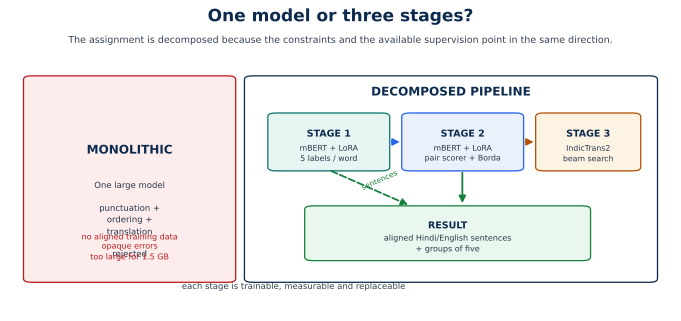
The decomposition is not a set of unrelated scripts. Three things are shared:
Three things are deliberately separate:
These invariants hold at every point in the pipeline:
NULL removal. Stage 1 cannot insert, delete, or rewrite a word.If a change violates one of these invariants, it changes the approach rather than improving it.
Decomposition is not free:
These costs are real and are analysed in Section 12 and Section 14. The design accepts them because the constraints make the monolith worse.
This section describes the pipeline as a system: what enters, what leaves, how control flows, and where each responsibility lives.
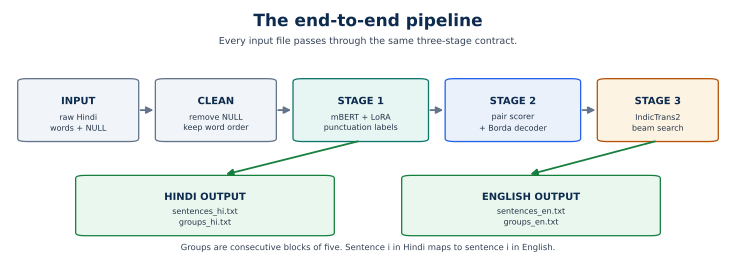
The pipeline executes in this order:
data/raw/*.txt file once.NULL tokens and record how many were removed.The single read is deliberate: all three stages must see exactly the same token order, and re-reading files between stages would create an opportunity for drift.
| Property | Requirement | Why |
|---|---|---|
| Encoding | UTF-8 | Devanagari support |
| Token separator | whitespace | matches the assignment format |
| Placeholder | exact token NULL |
removed before stage 1 |
| Punctuation | none expected | stage 1 predicts it |
| Sentence order | shuffled | stage 2 recovers it |
| File extension | .txt |
the pipeline globs *.txt |
The raw reader is intentionally simple:
text = Path(path).read_text(encoding="utf-8")
raw_tokens = text.split()
words = [token for token in raw_tokens if token != "NULL"]
It does not strip punctuation or normalise Unicode. That is correct for this assignment because the input is already word-tokenised and unpunctuated.
For each input stem, four files are written:
| File | Contents | Alignment rule |
|---|---|---|
sentences_hi.txt |
ordered Hindi sentences, one per line | line $i$ is sentence $i$ |
groups_hi.txt |
the same sentences, five per line | group $g$ contains sentences $5g+1$ to $5g+5$ |
sentences_en.txt |
English translations, one per line | line $i$ translates Hindi line $i$ |
groups_en.txt |
the same translations, five per line | group $g$ contains translations $5g+1$ to $5g+5$ |
The group count is always $\lceil n/5 \rceil$. The last group may be shorter.
The pipeline keeps one dictionary per input:
record = {
"words": [...], # after NULL removal
"null_count": int,
"labels": [...], # stage 1 label ids
"sentences_hi": [...], # punctuated Hindi sentences
"sentences_plain": [...], # same sentences without punctuation
"ordered_hi": [...], # stage 2 permutation applied
"groups_hi": [[...], ...], # groups of five
"ordered_en": [...], # stage 3 output
"groups_en": [[...], ...],
}
The key design detail is the distinction between sentences_hi and sentences_plain. Ordering is trained on plain sentences, so it must score the plain versions. The resulting permutation is then applied to the punctuated versions, so the Hindi output retains its punctuation.
The pipeline uses a fail-loud policy:
| Failure | Behaviour |
|---|---|
| No punctuation adapter | FileNotFoundError with the expected path and training command |
| No ordering adapter | FileNotFoundError with the expected path and training command |
Missing IndicTransToolkit |
ImportError with the install command |
| Gated IndicTrans2 repo | upstream authentication error; no fallback |
| No input files | SystemExit with the resolved input directory |
| CUDA OOM | allocator error; no silent CPU fallback |
| Empty translation item | preserved as an empty output line so alignment survives |
There is deliberately no fallback translator. A fallback would hide a failure and make metrics incomparable across runs.
| Responsibility | File | Key functions / classes |
|---|---|---|
| Configuration | src/constants.py |
paths, labels, window sizes, model ids |
| Dataset construction | src/data_prep.py |
parse_article, make_punctuation_windows, split_article_ids |
| Pair construction | src/ordering/pairs.py |
make_pairs_from_sentences |
| Punctuation data | src/punctuation/dataset.py |
PunctuationDataset |
| Punctuation training | src/punctuation/train.py |
WeightedTrainer, class_weights |
| Punctuation inference | src/punctuation/predict.py |
PunctuationRestorer |
| Ordering data | src/ordering/pairs.py |
SentencePairDataset |
| Ordering training | src/ordering/train.py |
Trainer with pair metrics |
| Ordering inference | src/ordering/decode.py |
OrderScorer, order_from_matrix |
| Translation | src/translation/indictrans.py |
IndicTrans2Translator |
| Orchestration | src/pipeline.py |
run, read_tokens |
| Evaluation | src/evaluate.py |
punctuation, pair, tau, BLEU/chrF |
| Verification | scripts/verify_colab_run.py |
data, model, report, output checks |
The data strategy is the foundation of the whole approach. The models are small and the supervision is natural; neither would be enough without a careful construction step.
The assignment provides raw input files but no training labels. Wikipedia supplies three things that match the task:
| Signal | How it becomes supervision |
|---|---|
| Punctuation already present | Remove the mark from the final token and store it as a word-level label. |
| Sentences already ordered | Consecutive sentences give correct order; swapping gives incorrect order. |
| Large Hindi prose corpus | Enough articles to create 25,000 windows and 40,000 pairs without synthetic generation. |
This is self-supervision by hiding, not weakly supervised guessing. The label is exact: the mark that was removed is the mark the model must restore.
The dataset is wikimedia/wikipedia, configuration 20231101.hi, streamed so that only the requested number of articles is kept. The default is 3,000 articles; the local run uses that count.
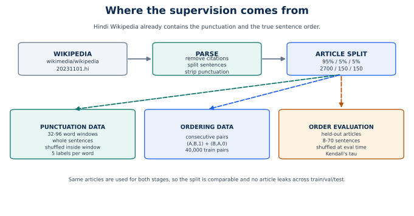
parse_article performs the following steps:
re.sub(r"\[\d+\]", "", text).(?<=[।॥?!])\s+.The regex is deliberately narrow. It splits after ।, ॥, ?, and !, not after every period, because Hindi prose usually uses the danda. The label extractor does recognise a final . as sentence_end when the token is not numeric, so period-final text contributes labels even if the article splitter does not cut there.
\wHindi words must be preserved exactly. A regex such as \w+ drops Devanagari combining marks (matras) and breaks words. The project therefore uses str.split() and a small punctuation stripper that understands the marks in the corpus.
raw_tokens = text.split()
words = [token for token in raw_tokens if token != "NULL"]
strip_punctuation then separates a trailing mark and returns (word, label). This is reversible: restore_punctuation puts the predicted mark back.
The split is by article id, not by window or sentence:
shuffle article ids with seed 42
test = last 5% -> 150 articles
val = previous 5% -> 150 articles
train = first 90% -> 2,700 articles
The same split is used for punctuation and ordering. No article can appear in two splits, so a window from a test article cannot share a document with a training window. This is the strongest practical guard against leakage.
Punctuation is learned from windows of whole sentences:
index = 0
while index < len(sentences):
add whole sentences until total >= 64 or adding another would exceed 96
if 32 <= total <= 96 and at least 2 sentences:
shuffle the sentence blocks
concatenate words and labels
emit one example
advance by approximately 40 words, at least one sentence
Shuffling is not cosmetic. The assignment input has shuffled sentences. If windows kept natural order, the model could learn cross-sentence continuity that is absent at inference. Shuffling forces the model to rely on local word context.
The stride (40) is smaller than the window (64), so neighbouring windows overlap by about 24 words. Overlap gives the inference smoother coverage: a word near the edge of one window may be central in another. The training data also sees more contexts per article without creating independent documents.
Ordering supervision is built only from consecutive sentences. For each sampled position $i$:
(sentence_i, sentence_{i+1}, 1)(sentence_{i+1}, sentence_i, 0)Each natural pair contributes two examples, so the labels are exactly balanced. The default cap is 30 sampled positions per article; the positions are spread evenly across the article rather than randomly chosen, so long articles are represented across their full span.
positions = 0 .. len(sentences)-2
if len(positions) > max_pairs:
sample evenly across the range
for each sampled index:
emit (A, B, 1)
emit (B, A, 0)
Why both directions?
(A,B,1) could learn "the second sentence is the answer" or exploit ordering artifacts.Random pairs would create many obviously unrelated pairs, making the task too easy and teaching the model to rely on topic similarity rather than discourse order. Consecutive pairs are hard: both sentences are from the same article, so the model must use coherence cues, not just subject matter.
Kendall's tau needs complete articles, not isolated pairs. The test split contributes up to 40 articles with 8–70 sentences. Each article is stored with its true sentence order.
At evaluation time, an article is shuffled with a seeded RNG, scored, reordered, and compared with the truth. The same pairwise matrix is reused for Borda, clusters, beam, and the TF-IDF ablation, so the decoder comparison is fair.
The local run produced the following counts:
| Split | Articles | Punctuation windows | Ordering pairs |
|---|---|---|---|
| train | 2,700 | 25,000 | 40,000 |
| validation | 150 | 2,317 | 3,000 |
| test | 150 | 2,208 | 3,000 |
| ordering evaluation | 40 held-out articles | — | — |
Training labels from reports/data_prep_summary.json:
| Label | Count | Share |
|---|---|---|
none |
1,653,107 | 90.947% |
comma |
59,324 | 3.264% |
sentence_end |
104,840 | 5.768% |
question |
236 | 0.013% |
exclamation |
153 | 0.008% |
The imbalance is the single most important fact about stage 1. A model that predicts none everywhere would already be about 91% accurate. That is why accuracy is not the headline metric and why class weights are mandatory.
| Missing item | Why it is absent | Consequence |
|---|---|---|
| LLM-generated labels | The assignment forbids an LLM solution; synthetic labels would hide the pipeline. | Natural supervision only. |
| Aligned triplets | Wikipedia does not provide them. | The task is decomposed instead of trained end to end. |
| Dialogue and poetry | Wikipedia is encyclopedic prose. | The model over-segments short utterances. |
| Balanced question/exclamation marks | Questions and exclamations are rare in Wikipedia. | Their F1 is effectively zero. |
| Document-level English translations of the assignment files | Not available. | Translation is evaluated on IITB pairs and inspected qualitatively on pipeline output. |
The verifier checks the data before any model is evaluated:
The data checks are intentionally independent of the models. A data bug should fail before GPU time is spent.
| Risk | Effect | Mitigation |
|---|---|---|
| Wikipedia text drifts across snapshots | Counts and label distribution can change. | Pin 20231101.hi and record the dataset/config. |
| Parser merges period-final sentences | Some long sentence blocks. | Labels still mark . boundaries; windowing remains valid. |
| Article split is random but finite | Sampling variance, especially 150 test articles. | Fixed seed, report split sizes, avoid overclaiming. |
| Subset adapters | Shipped models see 4,000 examples, not 25k/40k. | Separate subset and full-data claims. |
| Domain mismatch | Dialogue samples over-segment. | State the limitation; report per-sample counts. |
| Rare classes | Question/exclamation F1 zero. | Report honestly; do not hide behind accuracy. |
The input is a flat list of words $w_1,\ldots,w_n$ after NULL removal. The output is a label $y_i \in {0,1,2,3,4}$ for each word.
| Id | Label | Mark | Meaning |
|---|---|---|---|
| 0 | none |
nothing | word is inside a sentence |
| 1 | comma |
, |
a comma follows the word |
| 2 | sentence_end |
। |
the sentence ends after this word |
| 3 | question |
? |
a question ends after this word |
| 4 | exclamation |
! |
an exclamation ends after this word |
The label is reconstructed into text only after prediction:
text = word + PUNCTUATION[label]
This is why the stage cannot hallucinate words. It never generates text; it chooses labels for existing tokens.
| Approach | Pros | Cons | Verdict |
|---|---|---|---|
| Token classification | Exact word alignment; fast; small; deterministic; no hallucination; easy per-word evaluation | Cannot insert or rewrite words; rare labels hard; subword alignment needed | Chosen |
| Seq2seq punctuation | Can in principle rewrite or insert words | Slower; may change words; harder alignment; larger model | Rejected |
| LLM prompting | Fluent output | Forbidden; opaque; expensive; non-deterministic; not a pipeline | Rejected |
| Rule-based punctuation | No training | Brittle; does not scale; cannot use context well | Rejected as final stage |
The assignment cares about restoring punctuation without losing the input words. Token classification is the only formulation that guarantees that property.
mBERT uses WordPiece. A Hindi word may become several subword tokens. The model predicts a label for every subword, but the task defines one label per word.
The dataset resolves this by:
is_split_into_words=True,word_ids() to map each subword to its word,-100.CrossEntropyLoss(ignore_index=-100) then ignores those positions.
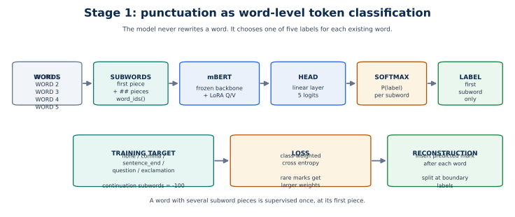
Why first subword?
The cost is that evidence in later subwords is ignored at the label position. The model still sees those subwords as context; only their loss positions are masked.
| Component | Choice |
|---|---|
| Backbone | bert-base-multilingual-cased |
| Backbone parameters | about 177.9M |
| Head | linear classifier over 5 labels |
| Adaptation | LoRA on query and value projections |
| LoRA rank | 16 |
| LoRA alpha | 32 |
| LoRA dropout | 0.1 |
| Modules saved | classifier |
| Bias | none |
| Trainable parameters | 593,669 |
| Total parameters | 177,860,362 |
| Trainable share | 0.3338% |
The backbone is frozen. Only the low-rank matrices and the classifier are trained. The adapter directory contains the LoRA weights, the classifier, and the tokenizer.
The training distribution is dominated by none:
| Label | Count | Share |
|---|---|---|
none |
1,653,107 | 90.947% |
comma |
59,324 | 3.264% |
sentence_end |
104,840 | 5.768% |
question |
236 | 0.013% |
exclamation |
153 | 0.008% |
The class weight for label $c$ is:
$$ w_c = \min\left(20,\ \frac{N}{K \cdot N_c}\right) $$
where $N$ is the total number of labelled positions, $K=5$, and $N_c$ is the count of label $c$. The cap at 20 prevents the two rarest classes from dominating the gradient.
The measured weights are:
| Label | Weight |
|---|---|
none |
0.2199 |
comma |
6.1279 |
sentence_end |
3.4675 |
question |
20.0000 |
exclamation |
20.0000 |
The loss is weighted cross entropy with ignore_index=-100. The model therefore sees far more none examples but each rare example contributes more.
| Setting | Value |
|---|---|
| Epochs | 3 |
| Train batch size | 8 |
| Eval batch size | 16 |
| Gradient accumulation | 2 |
| Learning rate | 3e-4 |
| Weight decay | 0.01 |
| Warmup | 6% |
| Best metric | validation boundary F1 |
| Checkpointing | one per epoch, keep best |
| fp16 | yes on CUDA |
| Gradient checkpointing | yes |
| Seed | 42 |
The checked-in adapter was trained with:
| Setting | Value |
|---|---|
| Epochs | 2 |
| Train batch size | 16 |
| Learning rate | 3e-4 |
| Train windows | 4,000 |
| Validation windows | 2,317 |
| Test windows | 2,208 |
| Trainable parameters | 593,669 |
The subset run is the source of the measured numbers in this document. The default three-epoch settings are the full-data recipe.
Token accuracy is dominated by none. A model that predicts none everywhere can score about 0.91 accuracy while detecting no boundaries. Validation boundary F1 treats all three boundary classes as one positive class and measures whether the model actually finds them.
The metric is computed as:
$$ P = \frac{TP}{TP+FP},\qquad R = \frac{TP}{TP+FN},\qquad F_1 = \frac{2PR}{P+R} $$
where a boundary prediction is positive if the label is sentence_end, question, or exclamation.
Inference is designed to use more context than a single 64-word window.
For a word list of length $n$:
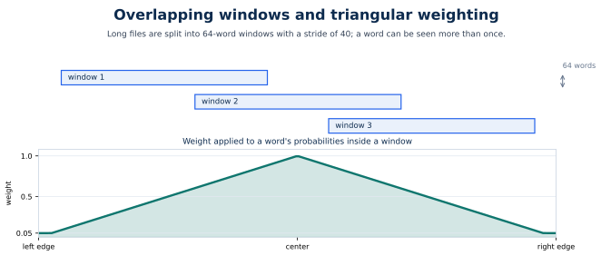
For a window of length $\ell$ and a word at position $i$ inside it:
$$ a_i = \max\left(0.05,\ 1 - \frac{|i - (\ell-1)/2|}{(\ell-1)/2 + 1}\right) $$
The weight is 1 at the centre, falls toward the edges, and never goes below 0.05. A word that appears in several windows receives a weighted average of its class probabilities:
$$ \bar{p}i = \frac{\sum_w a $$}\,p_{i,w}}{\sum_w a_{i,w}
The final label is $\arg\max \bar{p}_i$.
Why triangular instead of uniform? A word at the edge of a window has less left or right context. Its prediction is less reliable. The triangular weight lets central predictions dominate while still using every observation.
| Setting | Value |
|---|---|
| Inference window length | 64 words |
| Stride | 40 words |
| Maximum tokenizer length | 160 |
| Inference batch size | 16 |
| CUDA precision | fp16 |
| MPS precision | fp32 |
After labels are predicted:
sentence_end appends ।,comma appends ,,question appends ?,exclamation appends !,none appends nothing.A sentence is emitted whenever a boundary label occurs. If the file ends without a boundary, the remaining words are emitted as a final sentence. This is why the pipeline can never lose words: every word belongs to exactly one output sentence.
reports/evaluation.json on 1,500 held-out windows and 108,898 words:
| Metric | Value |
|---|---|
| Word accuracy | 0.8724 |
| Boundary precision | 0.8539 |
| Boundary recall | 0.9167 |
| Boundary F1 | 0.8842 |
none F1 |
0.9285 |
comma F1 |
0.3161 |
sentence_end F1 |
0.8838 |
question F1 |
0.0000 |
exclamation F1 |
0.0000 |
The training summary's test split is slightly different because it uses the Trainer's test evaluation on the full test JSONL: accuracy 0.8688, boundary F1 0.8633. The evaluation report uses the first 1,500 windows and the same inference path as the pipeline, so it is the number to quote for deployed behaviour.
sentence_end learnable.| Weakness | Cause | Evidence / effect |
|---|---|---|
| Comma F1 is low | Comma placement is style-dependent and often optional. | 0.3161 |
| Question/exclamation F1 is zero | 236 / 153 training examples. | 0.0 / 0.0 |
| Dialogue over-segmentation | Wikipedia sentences are at least five words; short utterances look like endings. | sample-6 has 80 sentences from 507 words; sample-7 has 99 from 846. |
| No word rewriting | Boundary marks only; no missing word repair. | A malformed input token stays malformed. |
| Subword evidence loss | Only the first subword carries the label. | Later-subword cues are context, not supervised positions. |
| Truncation risk | A very long window can exceed 160 subwords. | Rare for 64-word windows, but possible with long compounds. |
| Domain shift | Trained on encyclopedic prose. | News and dialogue differ. |
| Function | File | Role |
|---|---|---|
PunctuationDataset |
src/punctuation/dataset.py |
word list to subword tensors and first-subword labels |
class_weights |
src/punctuation/train.py |
inverse-frequency weights, capped at 20 |
WeightedTrainer |
src/punctuation/train.py |
weighted cross entropy with ignore_index=-100 |
compute_metrics |
src/punctuation/train.py |
accuracy, boundary P/R/F1, per-class F1 |
PunctuationRestorer |
src/punctuation/predict.py |
adapter loading, sliding windows, triangular aggregation |
restore |
src/punctuation/predict.py |
labels to punctuated and plain sentences |
sliding_windows, window_weight |
src/utils.py |
window layout and triangular weights |
strip_punctuation, restore_punctuation |
src/utils.py |
reversible mark handling |
Given $n$ sentences in unknown order, produce a permutation $\pi$ such that $\pi(0),\ldots,\pi(n-1)$ is the original document order.
The learning target is not the permutation. It is the pairwise relation:
$$ f(A,B) = P(A \text{ precedes } B \mid A,B) $$
A pair classifier is easier to train than a permutation generator because:
The cost is the composition problem: local pairwise accuracy does not automatically produce a globally consistent order.
| Approach | Pros | Cons | Verdict |
|---|---|---|---|
| Pairwise classifier + decoder | Balanced labels; reusable for any $n$; interpretable score matrix; cheap per pair | $O(n^2)$ pairs; local errors can form cycles; decoder matters | Chosen |
| Listwise classifier | One call per document | Needs a fixed maximum length; hard to train; poor generalization | Rejected |
| Seq2seq permutation | Directly emits order | Can invent or drop sentences; slow; needs permutation training data | Rejected |
| LLM ordering | Fluent, zero-shot | Forbidden; expensive; non-deterministic; opaque | Rejected |
| TF-IDF similarity only | No training | Measures topic, not discourse order; weak baseline | Kept as ablation |
The assignment forbids an LLM solution and demands an inspectable pipeline. Pairwise scoring is the most inspectable learned ordering method.
Only consecutive sentences are used. For each position $i$:
positive: (sentence_i, sentence_{i+1}) -> 1
negative: (sentence_{i+1}, sentence_i) -> 0
The default is 30 positions per article, sampled evenly:
positions = 0 .. len(sentences)-2
if len(positions) > max_pairs:
step = len(positions) / max_pairs
positions = [positions[int(i * step)] for i in range(max_pairs)]
Even sampling covers the start, middle, and end of long articles. Random sampling could miss entire sections.
Without negative reversals, the classifier could learn a trivial cue:
Reversing the same pair removes those shortcuts: the only difference between the positive and negative example is the order of the two texts.
The local training set is 4,000 pairs (2,000 natural positions × 2 directions). The full-data default is 40,000.
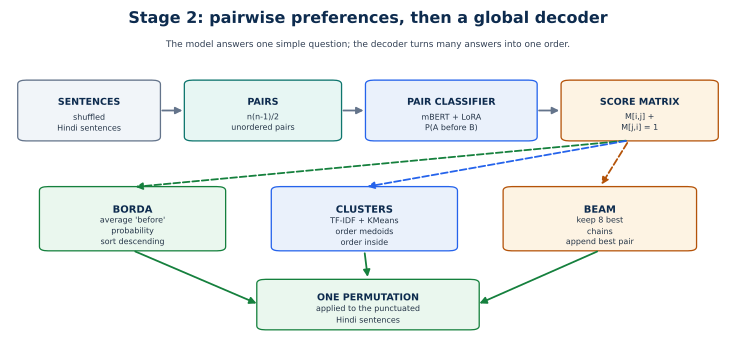
| Component | Choice |
|---|---|
| Backbone | bert-base-multilingual-cased |
| Input format | [CLS] A [SEP] B [SEP] |
| Max sequence length | 192 |
| Classifier | 2 labels: wrong_order, correct_order |
| Adaptation | LoRA on query and value projections |
| LoRA rank | 16 |
| LoRA alpha | 32 |
| LoRA dropout | 0.1 |
| Modules saved | classifier |
| Trainable parameters | 591,362 |
| Total parameters | 178,446,340 |
| Trainable share | 0.3314% |
The same mBERT checkpoint is used as in stage 1, but this is a separate adapter and a separate classification head. The two stages do not share trained weights at runtime.
| Setting | Value |
|---|---|
| Epochs | 2 |
| Train batch size | 8 |
| Eval batch size | 16 |
| Gradient accumulation | 2 |
| Learning rate | 2e-4 |
| Weight decay | 0.01 |
| Warmup | 6% |
| Best metric | validation accuracy |
| fp16 | yes on CUDA |
| Gradient checkpointing | yes |
| Seed | 42 |
| Setting | Value |
|---|---|
| Epochs | 1 |
| Train batch size | 16 |
| Learning rate | 2e-4 |
| Train pairs | 4,000 |
| Validation pairs | 3,000 |
| Test pairs | 3,000 |
| Trainable parameters | 591,362 |
The checked-in ordering adapter is the subset run. Its validation accuracy is 0.6770 and its test accuracy is 0.6543.
The task is balanced binary classification. The default cross-entropy loss is sufficient; no class weighting is used. The label distribution is exactly 50/50 by construction.
For $n$ sentences, the scorer builds an $n \times n$ matrix $M$:
$$ M_{ij} = P(\text{sentence } i \text{ precedes sentence } j) $$
Implementation details:
For 99 sentences, this is $\binom{99}{2}=4{,}851$ forward passes, not $99^2$. Batched inference kept all seven assignment files at 130.53 seconds total on MPS.
A good matrix has high probabilities above the diagonal and low probabilities below it. The lower triangle should be the complement of the upper triangle. The measured matrix does not satisfy that property perfectly, which is exactly why decoding is a separate problem.
For each sentence $i$:
$$ s_i = \frac{1}{n-1}\sum_{j \ne i} M_{ij} $$
Sort sentences by $s_i$ descending.
Interpretation: a sentence that is predicted to come before many other sentences has a high average "earliness" and is placed early. This is not literal Borda points from rank positions; it is a Borda-style aggregation of pairwise probabilities.
Why it works:
It is also the cheapest decoder: sorting $n$ floats after the matrix is built.
Beam search builds a chain directly:
starts = top beam_width sentences by mean before-score
beams = single-sentence paths
while any beam is incomplete:
extend each beam with every remaining sentence
new_score = old_score + M[last, next]
keep the best beam_width paths
return best complete path
| Setting | Value |
|---|---|
| Beam width | 8 |
| Start candidates | 8 highest earliness scores |
| Path score | sum of adjacent pair probabilities |
| Complexity | roughly $O(n^2 \cdot b)$ scoring operations plus sorting |
Beam search optimises adjacency, not the whole matrix. It can be better when local transitions are strong, but a single bad transition early in the path is hard to undo.
The cluster decoder reduces the number of expensive mBERT comparisons by grouping sentences first:
sublinear_tf=True.If clustering produces one cluster, the decoder falls back to global beam search. If there are fewer than four sentences, it returns the identity order.
Why character n-grams? Hindi inflection and compounds make word-level overlap brittle. Character 2–4 grams capture shared morphology and spelling.
Why clusters at all? The notes suggest reducing pairwise model calls. In practice, clustering also introduces a hard assumption: topically similar sentences are contiguous. That assumption is often false in encyclopedic prose, which explains the measured result.
This decoder uses no mBERT at all:
It measures how much of the ordering signal is just lexical overlap. It is a baseline, not a candidate for the final pipeline.
| Split | Accuracy | Macro precision | Macro recall | Macro F1 |
|---|---|---|---|---|
| validation | 0.6770 | 0.6786 | 0.6778 | 0.6768 |
| test | 0.6543 | 0.6560 | 0.6543 | 0.6534 |
The model is meaningfully above chance (0.50) but far from reliable.
| Decoder | Mean τ | Median τ | Min τ | Max τ |
|---|---|---|---|---|
| Borda | 0.2007 | 0.2304 | −0.1775 | 0.6444 |
| Clusters | 0.1220 | 0.1081 | −0.2652 | 0.7143 |
| Beam | 0.0921 | 0.0693 | −0.2467 | 0.7143 |
| TF-IDF ablation | 0.0631 | 0.0589 | −0.4847 | 0.5714 |
Borda is the clear winner, but the absolute score is modest. A mean τ of 0.20 means the recovered order is better than random but far from the true document order. This is the weakest stage of the pipeline and should be presented as such.
A pair classifier answers isolated questions. A global order requires those answers to be mutually consistent. Small local errors can create cycles:
$$ A \prec B,\quad B \prec C,\quad C \prec A $$
No permutation satisfies all three. Borda averages the conflict away; beam search resolves it greedily; clustering may never compare the conflicting pair at all. This is why 65% pair accuracy can coexist with 0.20 Kendall's tau.
| Weakness | Cause | Evidence / effect |
|---|---|---|
| Low global order quality | Pairwise errors compose badly. | Mean τ 0.2007 |
| Quadratic cost | Every unordered pair is scored. | 4,851 pairs for 99 sentences; 130.53 s for seven files |
| Cycle inconsistency | Local decisions are not constrained to a permutation. | Borda only approximates a solution |
| Cluster assumption | Topical similarity is not discourse adjacency. | Clusters τ 0.1220 |
| Beam myopia | Greedy adjacency can lock in an early error. | Beam τ 0.0921 |
| Truncation | Pairs longer than 192 subwords are cut. | Long sentences lose their endings |
| No explicit discourse model | mBERT sees two sentences only. | Entity/date continuity across many sentences is invisible |
| Domain shift | Wikipedia prose, not dialogue or lists. | Ordering may fail on the assignment samples |
| Short-article variance | An 8-sentence article has few constraints. | Min τ negative on some articles |
| Alternative | Why rejected |
|---|---|
| Train directly on permutations | Needs many permutations per article; hard to score; not enough data. |
| Use sentence embeddings + sorting | Weaker than pairwise supervision; no learned before/after relation. |
| Always use beam search | Measured worse than Borda. |
| Always use clusters | Measured worse and adds assumptions. |
| Use dates/numbers/entities as rules | Useful signal, but brittle and outside the learned pipeline. |
| LLM reranking | Forbidden by the assignment. |
A stronger future design would add a transitive consistency loss or a listwise reranker on top of the pairwise scores. That is a documented improvement, not part of the shipped system.
| Function | File | Role |
|---|---|---|
make_pairs_from_sentences |
src/ordering/pairs.py |
consecutive pairs plus reversals |
SentencePairDataset |
src/ordering/pairs.py |
tokenization of sentence pairs |
compute_metrics |
src/ordering/train.py |
accuracy and macro P/R/F1 |
OrderScorer.score_matrix |
src/ordering/decode.py |
symmetric pairwise probability matrix |
_earliness |
src/ordering/decode.py |
mean before-score for Borda |
order_from_matrix |
src/ordering/decode.py |
Borda, beam, and cluster dispatch |
cluster_sentences |
src/ordering/decode.py |
TF-IDF + KMeans + medoids |
_beam_order |
src/ordering/decode.py |
beam search over chains |
order_sentences_tfidf |
src/ordering/decode.py |
lexical ablation |
kendall_tau |
src/ordering/decode.py |
order evaluation |
evaluate_orderings |
src/ordering/decode.py |
shuffled-article evaluation, one matrix reused |
Translation is the only generative stage in the pipeline. That makes it powerful and risky:
The design response is to isolate translation behind a narrow interface: a list of Hindi sentences goes in, a list of English sentences comes out, one output per input. The stage cannot change the number of sentences, the order, or the Hindi text used by the rest of the system.
| Candidate | Pros | Cons | Verdict |
|---|---|---|---|
| IndicTrans2 200M distilled | Indic-specific; strong Hindi–English quality; small enough for the budget; official toolkit | Extra preprocessing dependency; gated upstream; one direction only | Chosen |
| NLLB-200 | Multilingual; widely used | Larger; less Indic-specialised at this size; heavier memory | Rejected |
| mBART / mT5 | Available in transformers | Weaker Hindi–English quality; needs fine-tuning | Rejected |
| Helsinki-NLP OPUS-MT | Very small; easy | Lower quality; limited context | Rejected |
| LLM translation | Fluent | Forbidden; expensive; non-deterministic; opaque | Rejected |
| Dictionary / transliteration | No model | Not translation; fails on grammar | Rejected |
IndicTrans2 is trained specifically for Indic→Indic and Indic→English translation. The 200M distilled variant is the smallest official checkpoint that still gives usable quality, which matters for the 1.5GB memory target.
The exact model id is:
ai4bharat/indictrans2-indic-en-dist-200M
The local checkout uses a mirrored copy at models/translation/indictrans2-indic-en-200M because the upstream repository is gated and this machine has no Hugging Face token. The mirror is the same checkpoint; it is not a different model.
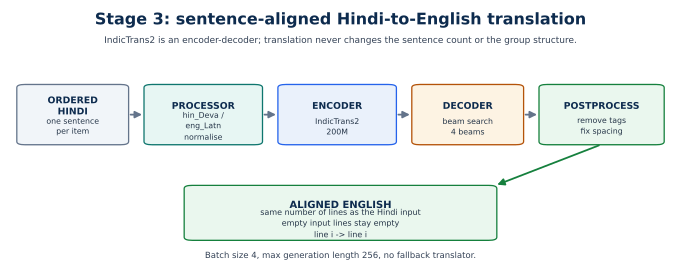
IndicTrans2 is an encoder–decoder transformer. The distilled 200M checkpoint is roughly 0.4GB in fp16. The pipeline uses the Hugging Face AutoTokenizer and AutoModelForSeq2SeqLM with trust_remote_code=True, plus IndicProcessor from IndicTransToolkit.
| Setting | Value |
|---|---|
| Source language | hin_Deva |
| Target language | eng_Latn |
| Parameters | about 200M |
| CUDA dtype | fp16 |
| MPS dtype | fp32 |
| Batch size | 4 |
| Beams | 4 |
| Max generation length | 256 |
| Early stopping | true |
| Return sequences | 1 |
IndicProcessor.preprocess_batch does the language-tagging and normalisation that IndicTrans2 expects. The translator does not hand-build prompt strings. This matters: the model was trained with the toolkit's conventions, and bypassing them changes the input distribution.
The tokenizer then truncates to the model maximum, pads to the longest item in the batch, and returns attention masks.
generated = model.generate(
**encoded,
num_beams=4,
num_return_sequences=1,
max_length=256,
early_stopping=True,
)
Beam search is used because translation quality matters more than latency. Four beams keep the cost moderate; larger beam counts gave diminishing returns for this model size.
IndicProcessor.postprocess_batch removes special tags, fixes spacing, and applies the toolkit's target-language cleanup. The result is a plain English string per input sentence.
The pipeline flattens all ordered Hindi sentences from all input files into one list:
flat_sentences = [all sentences from sample-1, then sample-2, ...]
translations = translator.translate(flat_sentences, batch_size=4)
It then walks the records again with an offset and slices the translation list back per file. This gives one English sentence per Hindi sentence and preserves order. Empty strings are preserved as empty strings, so indices never shift.
| Option | Pros | Cons |
|---|---|---|
| One sentence per call (batched) | Alignment is exact; memory is predictable; one bad sentence cannot corrupt a document | Loses cross-sentence context; pronouns can be ambiguous |
| Whole document | More context | Long inputs; alignment is harder; memory spikes; one failure affects everything |
| Paragraph chunks | Some context | Still needs alignment; chunk boundaries can split discourse |
| Translate before ordering | Translation could help order | Ordering English changes the task; errors compound differently |
Sentence-level translation is the right compromise for this pipeline because stage 1 already defines sentence boundaries. The output format also requires sentence-level English lines. Cross-sentence context is a documented limitation, not an accident.
The translation stage is evaluated on 100 examples from cfilt/iitb-english-hindi:
| Metric | Value |
|---|---|
| Corpus BLEU | 34.125 |
| chrF (word order 2) | 59.686 |
| Examples | 100 |
Neither metric measures factual correctness, fluency, or discourse coherence. Both are corpus-level scores on a benchmark sample, not on the assignment files.
From reports/evaluation.json:
| Hindi input (abridged) | Reference | Hypothesis |
|---|---|---|
आपकी कार में ब्लैक बॉक्स? |
A black box in your car? | A black box in your car? |
जबकि अमेरिका के सड़क योजनाकार ... |
As America's road planners struggle ... | While U.S. road planners are struggling ... |
यह डिवाइस, जो मोटर-चालक ... |
The devices, which track every mile ... | The device, which tracks every mile ... |
आम तौर पर हाईवे नियोजन ... |
The usually dull arena ... | Even boring work such as highway planning ... |
The first example is exact. The others are fluent paraphrases with small meaning shifts: singular/plural, added framing, and changed emphasis. This is the expected behaviour of a strong but small translation model.
From reports/run_summary.json, all seven assignment files:
| Stage | Time |
|---|---|
| Punctuation | 2.31 s |
| Ordering | 130.53 s |
| Translation | 102.17 s |
The seven files contain 443 sentences after punctuation and ordering. Translation is therefore about 0.23 seconds per sentence on MPS with batch size 4 and four beams. Ordering is the slowest stage because of the quadratic pair count.
The translator is loaded only after the ordering model is closed. Models are never held simultaneously, which is how the pipeline respects the memory cap.
| Weakness | Cause | Effect |
|---|---|---|
| Meaning drift | Small model; beam search picks fluent but approximate output. | Paraphrases can change emphasis or number. |
| No cross-sentence context | Sentences are translated independently. | Pronouns and discourse links can be wrong. |
| Named entities | Transliteration and spelling vary. | Names and places may be inconsistent. |
| Long-sentence truncation | 256-token generation limit. | Very long sentences can lose their ending. |
| Domain mismatch | IITB benchmark is news-like; assignment samples differ. | Benchmark BLEU may not reflect assignment quality. |
| Metric blind spots | BLEU/chrF do not measure facts or fluency. | A high score can hide meaning errors. |
| Gated upstream model | No HF token on this machine. | Requires the local mirror. |
| No glossary | No term dictionary or constrained decoding. | Technical terms can drift. |
| MPS is fp32 | fp16 is CUDA-only here. | Slower and more memory than fp16. |
| Alternative | Why rejected |
|---|---|
| Translate before ordering | Ordering English sentences changes the learned task and compounds errors differently. |
| Translate whole documents | Alignment and memory become harder; the required output is sentence-level. |
| Use a larger IndicTrans2 checkpoint | Better quality, but does not fit the 1.5GB target. |
| Use NLLB-200 | Larger and less Indic-specialised at the size that fits. |
| Use an LLM | Forbidden and non-deterministic. |
| Add a second translation model as fallback | Doubles memory and complicates the claim; no fallback is simpler and auditable. |
A stronger future design would translate paragraph groups with a glossary and a consistency pass. That is an improvement, not the shipped approach.
| Function / class | File | Role |
|---|---|---|
_import_indic_processor |
src/translation/indictrans.py |
compatibility shim for transformers 4.x/5.x |
IndicTrans2Translator.__init__ |
src/translation/indictrans.py |
loads tokenizer, processor, model, dtype |
IndicTrans2Translator.translate |
src/translation/indictrans.py |
batches, preprocesses, generates, postprocesses, aligns |
evaluate_translation |
src/evaluate.py |
BLEU/chrF on IITB samples |
run |
src/pipeline.py |
flattens sentences, translates, splits back per file |
The pipeline is deliberately linear:
raw token list
-> remove NULL
-> punctuation labels + Hindi sentences + plain sentences
-> permutation of whole sentences
-> ordered Hindi sentences
-> one English translation per Hindi sentence
-> sentence files + groups of five
Each arrow is a data contract, not just a function call.
| Hand-off | Producer | Consumer | Guarantee |
|---|---|---|---|
| token list | read_tokens |
punctuation restorer | every non-NULL token appears exactly once |
| labels + sentences | PunctuationRestorer.restore |
ordering stage | labels align with words; sentences cover all words |
| plain sentences | same | order_sentences |
no punctuation in ordering input |
| permutation | order_sentences |
writer / translator | whole sentences only; no word-level movement |
| Hindi sentence list | ordering stage | translator | one Hindi string per English string |
| English list | translator | writer | same length and order as Hindi list |
| groups | group_lines |
writer | consecutive chunks of exactly five, last may be shorter |
The most important guarantee is index alignment. Ordering returns indices into the punctuated sentence list. Translation returns one string per input string. Grouping is a pure slice. At no point does a stage guess which output belongs to which input.
The 1.5GB budget is enforced by not holding models concurrently:
load punctuation model -> process all files -> delete model + empty cache
load ordering model -> process all files -> delete model + empty cache
load translation model -> process all files -> delete model + empty cache
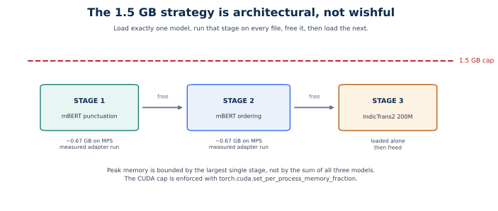
The source of truth for the cap is src/constants.py:
MEMORY_LIMIT_GB = 1.5
limit_gpu_memory turns that into a CUDA process fraction:
fraction = min(1.0, 1.5 / total_gb)
torch.cuda.set_per_process_memory_fraction(fraction)
On MPS and CPU the function returns a no-op report. This is an honest limitation: the 1.5GB cap is enforced on CUDA, not measured locally on Metal.
free_memory() calls gc.collect() and, on CUDA, torch.cuda.empty_cache() and torch.cuda.reset_peak_memory_stats(). The pipeline also deletes the stage object before loading the next model. Python imports for later stages happen inside run, so importing the pipeline does not load all three model families at once.
| Stage | Device | Allocated at end |
|---|---|---|
| punctuation training | MPS | 0.6687 GB |
| ordering training | MPS | 0.6709 GB |
| translation training | — | not trained |
| translation inference | MPS | not recorded in run_summary.json |
The training summaries record adapter-training memory, not pipeline peak memory. The pipeline report records time and file counts, not memory. Do not claim a measured end-to-end peak.
Input: list[str] of words with NULL already removed.
Output:
labels: list[str] # one of none/comma/sentence_end/question/exclamation
sentences_hi: list[str] # punctuated sentences
sentences_plain: list[str] # same sentences without punctuation
The plain list exists because the ordering model was trained on plain text. The punctuated list is what the final output and translation consume.
Input: plain sentences.
Output: a permutation list[int].
The pipeline applies the permutation to sentences_hi:
ordered_hi = [sentences_hi[index] for index in order]
This is why ordering cannot lose punctuation: it never edits strings, only reorders references.
Input: ordered Hindi sentences from all files, flattened into one list.
Output: one English string per input, in the same order.
The translator preserves empty inputs as empty outputs. That detail matters because an empty sentence must not shift the index of the next one.
For each input file, four outputs are written:
<stem>.sentences_hi.txt
<stem>.groups_hi.txt
<stem>.sentences_en.txt
<stem>.groups_en.txt
groups_hi.txt joins each consecutive group of five Hindi sentences with spaces. groups_en.txt does the same for English. The last group may be shorter than five.
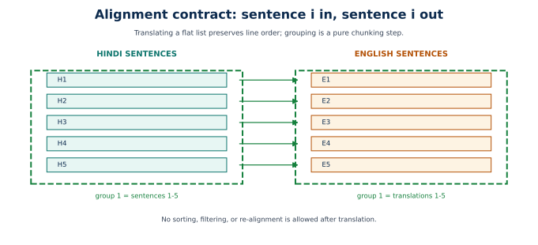
All paths are absolute, derived from the repository root, so the code behaves the same from a notebook, a CLI, or Colab.
| Constant | Value | Purpose |
|---|---|---|
BASE_MODEL |
bert-base-multilingual-cased |
shared encoder for stages 1 and 2 |
TRANSLATION_MODEL |
ai4bharat/indictrans2-indic-en-dist-200M |
stage 3 |
SRC_LANG / TGT_LANG |
hin_Deva / eng_Latn |
translation tags |
WIKI_DATASET |
wikimedia/wikipedia |
data source |
WIKI_CONFIG |
20231101.hi |
pinned snapshot |
WINDOW_WORDS |
64 | punctuation window |
STRIDE_WORDS |
40 | punctuation overlap |
MIN_WORDS / MAX_WORDS |
32 / 96 | window bounds |
MIN_SENT_WORDS / MAX_SENT_WORDS |
5 / 40 | sentence filter |
MAX_SEQ_LENGTH |
128 | punctuation tokenizer bound |
ORDER_MAX_LENGTH |
192 | pair tokenizer bound |
GROUP_SIZE |
5 | output grouping |
MEMORY_LIMIT_GB |
1.5 | CUDA process cap |
SEED |
42 | reproducibility |
The dataclass-free constants file is intentionally simple: one place to audit every magic number.
python -m src.data_prep \
--num-articles 3000 \
--max-train-windows 25000 \
--max-train-pairs 40000 \
--eval-articles 40
python -m src.punctuation.train \
--epochs 3 --batch-size 8 --learning-rate 3e-4
python -m src.ordering.train \
--epochs 2 --batch-size 8 --learning-rate 2e-4
python -m src.evaluate
python -m src.pipeline --strategy borda
Useful variants:
| Command | Effect |
|---|---|
python -m src.pipeline --limit 1 |
process one raw file |
python -m src.pipeline --no-translate |
run stages 1–2 only |
python -m src.pipeline --strategy beam |
use beam decoding |
python -m src.pipeline --strategy clusters |
use TF-IDF clusters + beam |
python -m src.evaluate --skip-translation |
fast metric check |
python -m src.punctuation.train --max-train-samples 4000 |
subset adapter |
python -m src.ordering.train --max-train-samples 4000 |
subset adapter |
data/raw/ assignment .txt files
data/processed/
data_prep_summary.json counts, label shares, split sizes
punctuation/
train.jsonl windows with words + labels
val.jsonl
test.jsonl
ordering/
train.jsonl sentence pairs with 0/1 labels
val.jsonl
test.jsonl
eval_articles.jsonl complete articles for Kendall's tau
models/
punctuation/
adapter/ LoRA weights, classifier, tokenizer
training_summary.json
ordering/
adapter/
training_summary.json
translation/
indictrans2-indic-en-200M/
outputs/
sample-N.sentences_hi.txt
sample-N.groups_hi.txt
sample-N.sentences_en.txt
sample-N.groups_en.txt
reports/
data_prep_summary.json
evaluation.json
run_summary.json
punctuation_training.json
ordering_training.json
The split between models/ and reports/ matters: adapters are runtime artifacts; reports are evidence. Training writes both a model-local summary and a central report copy.
| Failure | Behaviour |
|---|---|
| Missing punctuation adapter | FileNotFoundError with a training command |
| Missing ordering adapter | FileNotFoundError with a training command |
| Missing IndicTransToolkit | ImportError with setup instructions |
| Empty input file | punctuation emits no sentences; downstream stages see empty lists |
| Empty sentence string | preserved as empty translation; indices do not shift |
| Unknown decoding strategy | ValueError listing valid strategies |
No .txt files |
SystemExit with the resolved input directory |
| One sentence | ordering returns identity; translation still runs |
| Gated upstream model | requires the local mirror |
There are no silent fallbacks. A missing model fails loudly instead of producing a different pipeline.
SEED = 42 seeds Python, NumPy, PyTorch, and CUDA.20231101.hi.| Risk | Cause | Mitigation |
|---|---|---|
| No cross-stage feedback | Linear pipeline; later stages cannot fix earlier mistakes. | Evaluate each stage; document compounding error. |
| Ordering dominates runtime | Quadratic pair scoring. | Borda is the cheapest decoder; grouping is not used to reduce pairs. |
| Memory cap unverified locally | MPS no-op. | CUDA fraction code is implemented; be explicit that it was not exercised here. |
| Translation has no fallback | Single model path. | Intentional: auditable failure over silent substitution. |
| Sentence-level translation loses context | Contract is one sentence in, one out. | Document limitation; future paragraph mode. |
| Pipeline peak memory not recorded | run_summary stores timings only. |
Add peak memory logging before claiming a measured peak. |
| Subset adapters | Shipped models are small. | Separate subset results from full-recipe claims. |
| Property | Punctuation adapter | Ordering adapter |
|---|---|---|
| Task | 5-class token classification | 2-class pair classification |
| Backbone | mBERT | mBERT |
| LoRA rank | 16 | 16 |
| LoRA alpha | 32 | 32 |
| LoRA dropout | 0.1 | 0.1 |
| Target modules | query, value | query, value |
| Saved modules | classifier | classifier |
| Trainable params | 593,669 | 591,362 |
| Total params | 177,860,362 | 178,446,340 |
| Selection metric | validation boundary F1 | validation accuracy |
| Default epochs | 3 | 2 |
| Default batch | 8 | 8 |
| Default LR | 3e-4 | 2e-4 |
The adapters are separate. Sharing the backbone weights on disk would save space but does not change the fact that the tasks need different heads and different adaptation.
| Option | Pros | Cons |
|---|---|---|
| LoRA | Tiny checkpoints; small trainable set; fits memory; fast to train | Slightly lower ceiling than full fine-tuning |
| Full fine-tuning | Potentially stronger | Much more memory; larger checkpoints; wasteful for a frozen 178M encoder |
| Frozen features + linear head | Cheapest | Too weak for punctuation and pair classification |
| Prompt tuning | Very small | Less mature for BERT classification |
LoRA is the right trade-off for a 1.5GB budget and a project that must ship adapters, not multi-gigabyte checkpoints.
Wikipedia snapshot
-> parse articles
-> article-level split
-> punctuation windows (words + labels)
-> ordering pairs (A, B, label)
-> adapters
-> evaluation report
-> decoder choice
The feedback loop is explicit:
python -m src.evaluate.reports/evaluation.json has three top-level sections:
{
"no_llm": true,
"memory_limit_gb": 1.5,
"punctuation": {"status": "ok", "accuracy": 0.8724, "boundary": {}, "per_class_f1": {}},
"ordering": {"status": "ok", "pairs": {}, "kendall_tau": {}},
"translation": {"status": "ok", "bleu": 34.125, "chrf": 59.686, "samples": []}
}
Why one report?
reports/run_summary.json is the runtime counterpart: it records timings, file counts, group size, strategy, model paths, and memory limit. Training summaries live under models/*/training_summary.json and are copied to reports/*_training.json.
That restraint is part of the approach: the system is small enough to explain end to end, and every number has a known provenance.
| Risk | Effect | Mitigation |
|---|---|---|
| MPS SDPA dropout bug | Training fails or silently misbehaves | eager attention on MPS |
| fp16 on MPS | Unsupported/incorrect | fp32 on MPS; fp16 CUDA |
| Rare classes | Zero F1 | class weights, honest reporting |
| Subset caps | Lower scores | separate subset/full claims |
| Validation metric mismatch | Wrong checkpoint selected | boundary F1 for punctuation, accuracy for ordering |
| Dataset drift | Different label counts | pin snapshot, record summary |
| Long windows/pairs | Truncation | bounds at 128/192 subwords |
The evaluation is not a single leaderboard number. The pipeline has three different tasks, and each needs a metric that matches what it is supposed to do.
| If we only report | We would miss |
|---|---|
| Punctuation accuracy | The model can score 0.91 by predicting none everywhere. |
| Pair accuracy | 65% pair accuracy can still produce a poor global order. |
| BLEU | Fluent but semantically wrong translations can score well. |
| One end-to-end score | We would not know which stage failed. |
The evaluation therefore reports a small scoreboard, not a single number.
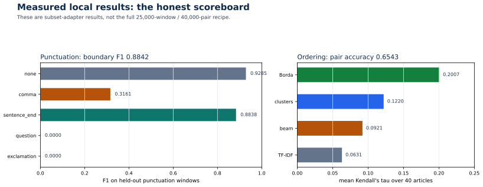
$$ \text{accuracy} = \frac{\text{correct word labels}}{\text{all word labels}} $$
This is easy to interpret but dominated by none. It is reported, not used for model selection.
A prediction is a boundary if the label is sentence_end, question, or exclamation.
$$ P = \frac{TP}{TP+FP},\qquad R = \frac{TP}{TP+FN},\qquad F_1 = \frac{2PR}{P+R} $$
This answers the practical question: did the model find the ends of sentences? It treats all three boundary types as one positive class, which is appropriate because the output format needs boundaries more than it needs the exact rare mark.
For each label $c$:
$$ P_c = \frac{TP_c}{TP_c+FP_c},\qquad R_c = \frac{TP_c}{TP_c+FN_c},\qquad F1_c = \frac{2P_cR_c}{P_c+R_c} $$
This exposes the imbalance. A high boundary F1 can hide a zero for question.
The pair test set is balanced, so accuracy is meaningful:
$$ \text{accuracy} = \frac{\text{correct pair decisions}}{3{,}000} $$
Macro F1 averages the two class F1 scores, so a model that favours one direction is penalised.
For a recovered order and the true order:
$$ \tau = \frac{C - D}{\binom{n}{2}} $$
where $C$ is the number of concordant pairs, $D$ the number of discordant pairs, and $n$ the number of sentences. Values range from −1 (reversed) through 0 (random) to 1 (perfect).
Why tau?
The evaluator shuffles each held-out article with a seeded RNG, recovers an order, and compares against the identity order. The same score matrix is reused by every decoder, so the comparison is fair.
Corpus BLEU combines clipped n-gram precision with a brevity penalty:
$$ \text{BLEU} = BP \cdot \exp\left(\sum_{n=1}^{4} w_n \log p_n\right) $$
where $p_n$ is the modified n-gram precision and $BP$ penalises outputs shorter than the reference. It rewards exact phrasing.
chrF computes character n-gram F-score between hypothesis and reference. It is more tolerant of morphology and word-order differences than BLEU, which matters for Hindi→English.
Both are computed with sacrebleu at corpus level.
reports/evaluation.json, 1,500 test windows, 108,898 words:
| Metric | Value |
|---|---|
| Word accuracy | 0.8724 |
| Boundary precision | 0.8539 |
| Boundary recall | 0.9167 |
| Boundary F1 | 0.8842 |
none F1 |
0.9285 |
comma F1 |
0.3161 |
sentence_end F1 |
0.8838 |
question F1 |
0.0000 |
exclamation F1 |
0.0000 |
The training summary's test split reports accuracy 0.8688 and boundary F1 0.8633 on the full test JSONL. The difference comes from the evaluation subset (first 1,500 windows) and the deployed sliding-window inference path. Quote the evaluation report for pipeline behaviour and the training summary for the Trainer's held-out evaluation.
| Metric | Value |
|---|---|
| Test pairs | 3,000 |
| Pair accuracy | 0.6543 |
| Macro precision | 0.6560 |
| Macro recall | 0.6543 |
| Macro F1 | 0.6534 |
Decoder comparison on 40 held-out articles:
| Decoder | Mean τ | Median τ | Min τ | Max τ |
|---|---|---|---|---|
| Borda | 0.2007 | 0.2304 | −0.1775 | 0.6444 |
| Clusters | 0.1220 | 0.1081 | −0.2652 | 0.7143 |
| Beam | 0.0921 | 0.0693 | −0.2467 | 0.7143 |
| TF-IDF | 0.0631 | 0.0589 | −0.4847 | 0.5714 |
| Metric | Value |
|---|---|
| Dataset | cfilt/iitb-english-hindi |
| Examples | 100 |
| BLEU | 34.125 |
| chrF | 59.686 |
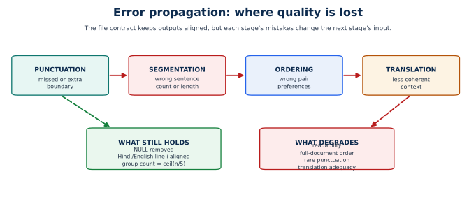
| Error | Evidence | Root cause |
|---|---|---|
| Over-segmentation of dialogue | sample-6: 507 words → 80 sentences; sample-7: 846 words → 99 sentences | Wikipedia training sentences have at least five words; short utterances are out of distribution. |
| Low comma F1 | 0.3161 | Comma placement is style-dependent and often optional; many commas have no unique answer. |
| Zero question/exclamation F1 | 0.0 / 0.0 | Only 236 question and 153 exclamation labels in training. |
| Boundary precision below recall | 0.8539 vs 0.9167 | The model prefers to split; over-segmentation is the visible symptom. |
Concrete over-segmentation examples from outputs/sample-6.sentences_hi.txt:
हूं।
यू।
These are sentence fragments, not sentences. The model is applying a boundary rule learned from longer Wikipedia sentences.
| Error | Evidence | Root cause |
|---|---|---|
| Weak global order | Mean τ 0.2007 | Pairwise errors do not compose into a consistent permutation. |
| Negative tau on some articles | Min τ −0.1775 for Borda; −0.4847 for TF-IDF | Short articles and domain shift; some recovered orders are worse than random. |
| Cluster assumption fails | Mean τ 0.1220 | Topically similar sentences are not necessarily adjacent. |
| Beam locks in early mistakes | Mean τ 0.0921 | Greedy adjacency cannot undo a bad first transition. |
| Pair model is only modestly above chance | 0.6543 accuracy | The task is hard; mBERT pair classification without discourse structure is limited. |
The gap between pair accuracy and tau is the central ordering insight:
| Error | Evidence | Root cause |
|---|---|---|
| Meaning drift | Example 2 changes "As America's road planners struggle..." to "While U.S. road planners are struggling..." | Small model; beam search picks a fluent paraphrase. |
| Number changes | "The devices" → "The device" | Local sentence context is insufficient. |
| Added framing | "The usually dull arena" → "Even boring work such as..." | Model rewrites rather than translates literally. |
| Names and terms drift | Observed in samples | No glossary or constrained decoding. |
| Benchmark ≠ pipeline | BLEU is on IITB, not assignment outputs | No reference translations for assignment files. |
The pipeline can be wrong in a way no stage metric captures:
This is why the approach documents limitations instead of presenting one aggregate score.
| Result | What it proves |
|---|---|
| Boundary F1 0.8842 | The model reliably finds most sentence endings. |
sentence_end F1 0.8838 |
Danda restoration works well. |
| Ordering τ 0.2007 | The learned scorer beats the TF-IDF baseline (0.0631). |
| BLEU 34.125 | The translation stage is usable on a standard benchmark. |
| Pair accuracy 0.6543 | The ordering model learned a real signal, not a label shortcut. |
The project is not claiming a solved pipeline. It is claiming a working, inspectable pipeline with measured strengths and weaknesses.
| Limitation | Effect |
|---|---|
| One seed | No confidence intervals across training runs. |
| 40 ordering articles | Tau estimates are noisy; min/max are wide. |
| 100 translation examples | BLEU/chrF have sampling variance. |
| Subset adapters | Scores are not the full 25k/40k recipe. |
| Single Wikipedia snapshot | Domain and label distribution may drift. |
| Two evaluation paths for punctuation | Trainer test F1 and deployed F1 differ slightly. |
Report means and counts, not just best examples. The verifier checks that the report is present and finite, not that the scores are high.
A notebook can appear to run while silently skipping a stage. A report can contain stale numbers. An output file can have a different number of Hindi and English lines. The verifier makes those failures loud.
scripts/verify_colab_run.py is the executable contract. It checks that the repository actually contains what the documentation says it contains.
| Area | Checks |
|---|---|
| Data summary | split sizes 2,700/150/150; 25,000 punctuation train windows; 40,000 ordering train pairs; 40 eval articles |
| Punctuation data | JSONL row counts; words/labels alignment; label vocabulary; window length bounds |
| Ordering data | pair counts; binary labels; approximately balanced classes |
| Adapters | adapter directories, config files, tokenizer files, training summaries |
| Reports | required keys, status ok, finite metrics, sample counts |
| Thresholds | punctuation and ordering quality floors |
| Outputs | all seven stems; expected file names; Hindi/English line alignment; groups of five |
| Notebooks | expected cell counts and structure |
| Metric | Minimum |
|---|---|
| Punctuation accuracy | 0.85 |
| Punctuation boundary F1 | 0.85 |
none F1 |
0.85 |
sentence_end F1 |
0.80 |
| Ordering pair accuracy | 0.58 |
| Ordering macro F1 | 0.55 |
| Borda Kendall tau | 0.08 |
| Train boundary F1 | 0.75 |
| Train ordering accuracy | 0.58 |
| BLEU | 30 |
| chrF | 50 |
These are floors, not targets. They catch a broken run, not a mediocre one.
python scripts/verify_colab_run.py
The full local run passed 150/150 checks. The --skip-model-smoke path passed 142 checks; the remaining eight are smoke-test checks that require a separate quick-run artifact.
That boundary is deliberate. A verifier that claims more than it checks is worse than no verifier.
| Question | Evidence |
|---|---|
| Did you use an LLM? | no_llm: true; only mBERT and IndicTrans2. |
| How good is punctuation? | Boundary F1 0.8842; sentence_end F1 0.8838; comma F1 0.3161. |
| Why is comma weak? | Style ambiguity and class imbalance. |
| How good is ordering? | Pair accuracy 0.6543; Borda tau 0.2007. |
| Why not use clusters? | Measured tau 0.1220, worse than Borda. |
| How good is translation? | BLEU 34.125, chrF 59.686 on 100 IITB pairs. |
| Is the pipeline aligned? | Sentence-level contract plus output alignment checks. |
| Is it reproducible? | Seed 42, pinned dataset, verifier, recorded reports. |
| What is the biggest weakness? | Global ordering; documented with tau and failure modes. |
| Are the scores from the full recipe? | No; subset adapters. This is stated everywhere it matters. |
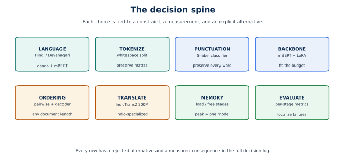
| # | Decision | Chosen | Main alternative rejected | Why |
|---|---|---|---|---|
| 1 | Task decomposition | Three stages | End-to-end generation | No aligned triplets; isolation; small models |
| 2 | Punctuation formulation | Word-level 5-class classification | Seq2seq punctuation | Guarantees word preservation |
| 3 | Backbone | mBERT | MuRIL / IndicBERT / larger encoder | Fits budget; strong multilingual baseline; known tooling |
| 4 | Adaptation | LoRA | Full fine-tuning | Tiny checkpoints; low memory |
| 5 | Punctuation decoding | Overlapping windows + triangular weights | One window / uniform average | More context; robust edge predictions |
| 6 | Class imbalance | Capped inverse-frequency weights | Resampling / ignore rare classes | Keeps all data; simple; auditable |
| 7 | Ordering formulation | Pairwise classifier | Listwise / generative permutation | Balanced data; reusable for any length |
| 8 | Ordering decoder | Borda-like mean score | Beam / clusters / TF-IDF | Measured best tau |
| 9 | Translation model | IndicTrans2 200M | NLLB / mBART / LLM | Indic-specific; small; strong |
| 10 | Translation unit | Sentence | Whole document / paragraph | Exact alignment; required output format |
| 11 | Data source | Hindi Wikipedia | Synthetic / LLM-generated | Natural supervision; assignment forbids LLM |
| 12 | Data split | Article-level | Window-level / sentence-level | Prevents leakage |
| 13 | Memory strategy | Load one stage at a time | Load all models | Peak equals largest model |
| 14 | Failure strategy | Loud failure, no fallback | Silent fallback model | Reproducibility and auditability |
| 15 | Evaluation | Per-stage metrics + composition checks | One aggregate score | Localises failures |
The assignment asks for punctuation, ordering, translation, and grouping from raw Hindi tokens. End-to-end training would require aligned (raw tokens, ordered English sentences) triples, which are not available.
Three learned/rule stages with explicit text contracts:
tokens -> punctuated sentences -> ordered sentences -> English sentences
| Alternative | Why rejected |
|---|---|
| One seq2seq model from tokens to English | No aligned training data; cannot inspect intermediate failures; one model would have to learn three tasks at once. |
| Two stages: punctuate+translate, then order English | Ordering English changes the learned task; translation errors then affect ordering. |
| Translation first, then punctuation/ordering | Punctuation is language-specific; translating unpunctuated text is harder; order would be recovered in English, not Hindi. |
The input already contains every word. The task is to insert marks, not to generate text.
Five-class classification per word, with labels attached to the first subword.
| Alternative | Why rejected |
|---|---|
| Seq2seq punctuation | Could rewrite words; slower; harder alignment; larger model. |
| Rule-based punctuation | Brittle; cannot use contextual cues; poor on ambiguous commas. |
| LLM prompting | Forbidden; non-deterministic; opaque. |
| Span prediction | More complex for the same output; no clear advantage. |
The project needs a Hindi-capable encoder that fits a 1.5GB budget and runs on Colab and Apple Silicon.
bert-base-multilingual-cased.
| Alternative | Pros | Why rejected |
|---|---|---|
| MuRIL | Indic-specific; strong Hindi | Larger; different tokenizer; tooling less predictable for this project. |
| IndicBERT | Indic-specific | Masked-LM checkpoint; classification task support is less standard. |
| XLM-R base | Strong multilingual | Larger than mBERT base; more memory. |
| DistilmBERT | Smaller and faster | Lower capacity; less proven for Hindi punctuation. |
| A larger encoder | Better ceiling | Does not fit the budget; contradicts the constraint. |
The budget is 1.5GB and the deliverable includes adapters, not a training cluster.
LoRA rank 16, alpha 32, dropout 0.1, on query and value projections.
| Alternative | Why rejected |
|---|---|
| Full fine-tuning | Much more memory; larger checkpoints; slower; unnecessary for this scale. |
| Frozen encoder + linear head | Too weak for punctuation and pair classification. |
| Adapters (Houlsby) | More parameters and complexity than LoRA for the same goal. |
| Prompt tuning | Less mature for BERT classification; harder to reproduce. |
mBERT has a finite input length; documents are longer. A single window loses context; fixed non-overlapping windows create edge artifacts.
64-word windows, 40-word stride, triangular weighting, minimum weight 0.05.
| Alternative | Why rejected |
|---|---|
| One window per document | Truncation loses most of the document. |
| Non-overlapping windows | Predictions at boundaries have little context. |
| Uniform averaging | Treats unreliable edge predictions as equal to central ones. |
| Very large windows | More memory; padding waste; no guarantee of better accuracy. |
none is 90.947% of labels. Rare classes are almost absent.
$$ w_c = \min\left(20,\frac{N}{K N_c}\right) $$
| Alternative | Why rejected |
|---|---|
| No weighting | Model collapses to none; boundaries are missed. |
| Random oversampling | Repeats the same rare examples; risks overfitting; changes epoch semantics. |
Undersampling none |
Throws away most of the data. |
| Focal loss | Plausible, but adds another hyperparameter and was not measured. |
| Ignore rare classes | Hides the problem instead of reporting it. |
Ordering is a permutation problem. Direct permutation training needs many labelled permutations.
Binary before/after classification on consecutive sentence pairs, with reversals.
| Alternative | Why rejected |
|---|---|
| Listwise classifier | Needs a fixed maximum length; harder to train; less reusable. |
| Seq2seq permutation | Can drop or invent sentences; needs permutation data. |
| Sentence embeddings + sort | Weaker; no learned before/after relation. |
| LLM ordering | Forbidden; expensive; non-deterministic. |
Pairwise scores are local and can be inconsistent. The decoder must produce a permutation.
Sort by mean before-score:
$$ s_i = \frac{1}{n-1}\sum_{j \ne i} M_{ij} $$
| Alternative | Measured tau | Why rejected |
|---|---|---|
| Clusters | 0.1220 | Hard topical assumption; worse than Borda. |
| Beam | 0.0921 | Greedy adjacency locks in early errors. |
| TF-IDF | 0.0631 | Lexical similarity is not discourse order. |
| Integer linear programming | Not measured | Potentially better global consistency, but more complex and slower. |
The translation stage needs Hindi→English quality within the budget, with no LLM.
ai4bharat/indictrans2-indic-en-dist-200M.
| Alternative | Why rejected |
|---|---|
| NLLB-200 | Larger; less Indic-specialised at the size that fits. |
| mBART / mT5 | Weaker zero-shot Hindi→English; would need fine-tuning. |
| OPUS-MT | Smaller but lower quality. |
| Larger IndicTrans2 | Better quality but does not fit the memory target. |
| LLM | Forbidden. |
The output format is sentence-level Hindi and English, plus groups of five.
Translate one sentence at a time, batched.
| Alternative | Why rejected |
|---|---|
| Whole document | Long inputs; alignment harder; memory spikes. |
| Paragraph chunks | Better context but needs chunk alignment; can split discourse. |
| Translate before ordering | Changes the ordering task; errors compound differently. |
The assignment provides raw inputs but no labels. The project must create supervision without an LLM.
wikimedia/wikipedia, config 20231101.hi.
| Alternative | Why rejected |
|---|---|
| LLM-generated labels | Forbidden; circular; hides the pipeline. |
| Manually labelled data | Too small; not reproducible here. |
| Other web corpora | Licensing and preprocessing variance; Wikipedia is cleaner and pinned. |
| Assignment files as training data | No labels; would leak test inputs. |
Windows and sentence pairs come from articles. Splitting at the window level would leak document context.
Shuffle article ids with seed 42; 90/5/5 split.
| Alternative | Why rejected |
|---|---|
| Window-level split | Neighbouring overlapping windows would appear in train and test. |
| Sentence-level split | Same article in multiple splits; leakage. |
| Random pair split | Reversals of the same pair could land in different splits. |
The 1.5GB budget is smaller than the sum of the three models.
Load one stage, process all files, free it, load the next.
| Alternative | Why rejected |
|---|---|
| Load all models at once | Exceeds the budget. |
| Reload the model per file | Wasteful; slower; more memory churn. |
| Quantise everything | Quality risk; not needed once stages are sequential. |
A fallback can make a demo run when a model is missing.
Fail loudly with a training or setup instruction.
| Alternative | Why rejected |
|---|---|
| Rule-based fallback | Hides model failure; produces different behaviour. |
| Second translation model | Doubles memory; complicates claims. |
| Silent skip of a stage | Output shape changes; results become incomparable. |
One aggregate score cannot tell us whether punctuation, ordering, or translation failed.
Separate metrics plus composition checks.
| Alternative | Why rejected |
|---|---|
| One end-to-end BLEU | Requires reference translations for assignment files; hides stage failures. |
| Human evaluation only | Not reproducible; expensive; small sample. |
| Model loss only | Not interpretable; does not measure deployment behaviour. |
| Strength | Why it matters |
|---|---|
| Preserves every Hindi word | Stage 1 only assigns labels; stages 2–3 permute and translate. |
| Strong sentence-ending restoration | Boundary F1 0.8842; sentence_end F1 0.8838. |
| Learned ordering beats lexical baseline | Borda tau 0.2007 vs TF-IDF 0.0631. |
| Usable translation quality | BLEU 34.125, chrF 59.686 on 100 IITB pairs. |
| Fits the memory target by construction | One model at a time; LoRA adapters. |
| Fully inspectable | No LLM; every stage has a small interface. |
| Reproducible | Seed 42, pinned data, recorded reports, verifier. |
| Honest about weaknesses | Comma and rare-class F1, ordering tau, domain mismatch all documented. |
| Weakness | Evidence | Consequence |
|---|---|---|
| Comma restoration is weak | F1 0.3161 | Many commas are missing or misplaced. |
| Question/exclamation are effectively unsupported | F1 0.0 | The model rarely predicts them. |
| Global ordering is weak | Mean tau 0.2007 | Documents are partially reordered, not fully reconstructed. |
| Dialogue is over-segmented | 507 words → 80 sentences; 846 → 99 | Short utterances become sentence fragments. |
| Translation drifts | BLEU 34, sample paraphrases | Meaning can change while fluency stays high. |
| No cross-sentence context in translation | Sentence-level interface | Pronouns and discourse links can be wrong. |
| No CUDA memory measurement locally | MPS no-op | The 1.5GB cap is implemented but not verified on this machine. |
| Subset adapters | 4,000 examples each | Scores are not the full 25k/40k recipe. |
A constrained, inspectable Hindi→English pipeline that restores sentence boundaries well, restores commas modestly, improves sentence order over a lexical baseline but does not fully recover document order, and translates with a small Indic-specific model at usable quality — while respecting a no-LLM rule and a 1.5GB CUDA budget design.
| Overclaim | Why it is false |
|---|---|
| "The pipeline reconstructs documents accurately." | Mean tau 0.2007 is weak. |
| "The punctuation model handles questions and exclamations." | Both F1 are 0.0. |
| "The models were trained on the full 25k/40k data." | Shipped adapters are 4k subsets. |
| "The 1.5GB CUDA cap was verified." | It was not exercised locally on CUDA. |
| "BLEU 34 measures the assignment output." | It measures 100 IITB pairs. |
| "The system uses no pretrained translation model." | It uses IndicTrans2; "no LLM" is the actual claim. |
| "The pipeline works on any Hindi text." | Domain mismatch and dialogue failures are observed. |
| Constraint | How the design complies | Caveat |
|---|---|---|
| No LLM solution | Only mBERT classifiers and IndicTrans2 | IndicTrans2 is a pretrained MT model, not an LLM pipeline. |
| 1.5GB GPU budget | LoRA + sequential loading + CUDA fraction cap | Cap is not locally measured on CUDA. |
| Hindi/Devanagari input | Whitespace tokenization; danda-aware labels | Parser is tuned to Wikipedia prose. |
| Sentence and group output | Sentence contract + groups of five | Grouping is positional, not semantic. |
| Reproducibility | Seed, pinned snapshot, reports, verifier | One seed; no confidence intervals. |
The improvements are ordered by expected impact, not by implementation ease.
Ordering is the weakest stage and the largest source of end-to-end error.
| Improvement | Why it should help | Cost |
|---|---|---|
| Train on the full 40,000 pairs | The shipped adapter sees only 4,000. | More compute; still within the design. |
| Hard negative mining | Random reversals are easy; hard negatives teach discourse cues. | Need a mining pass. |
| Listwise reranker on top of pair scores | Directly optimises a permutation instead of isolated pairs. | New model and training data. |
| Transitive consistency loss | Penalises cycles such as $A \prec B \prec C \prec A$. | More complex training. |
| Integer linear programming decoder | Finds a globally consistent order from pair probabilities. | Slower; more engineering. |
| Entity/date/number features | Strong ordering cues that mBERT may miss. | Feature engineering; rule risk. |
| Paragraph-level grouping before ordering | Reduces pair count and adds local context. | Grouping errors can propagate. |
The cheapest high-impact step is full-data training plus hard negatives. The most principled step is a listwise or ILP decoder on top of the existing scores.
| Improvement | Why it should help | Cost |
|---|---|---|
| Full 25,000-window training | The shipped punctuation adapter sees 4,000. | More compute. |
| Add dialogue/news data | The current corpus is encyclopedic. | Licensing and preprocessing. |
| Targeted comma data | Comma F1 is 0.3161. | Annotation or careful mining. |
| Rare-class oversampling with augmentation | Only 236 questions and 153 exclamations. | Risk of overfitting; must be measured. |
| Focal loss or label smoothing | May improve rare-class learning. | Another hyperparameter. |
| CRF or span-level decoding | Enforces label transitions. | More complex inference. |
| Post-processing rules for question marks | Questions often have interrogative words. | Rule brittleness. |
Class weights alone have already been tried; the bottleneck is rare-class diversity, not loss weighting.
| Improvement | Why it should help | Cost |
|---|---|---|
| Paragraph-level context | Resolves pronouns and discourse links. | Alignment complexity. |
| Glossary / constrained decoding | Keeps names and technical terms consistent. | Domain work. |
| Larger IndicTrans2 checkpoint | Better quality. | Breaks the small-memory target. |
| Two-pass consistency check | Fixes entity and number drift. | Extra inference. |
| Human evaluation on assignment samples | Measures what BLEU cannot. | Manual effort. |
| Improvement | Why it should help | Cost |
|---|---|---|
| Multiple seeds | Confidence intervals for tau and F1. | More training runs. |
| More ordering articles | Reduce tau variance. | More evaluation time. |
| Larger translation sample | Reduce BLEU/chrF variance. | More inference. |
| Pipeline-level reference set | Measure end-to-end meaning, not just stages. | Manual references. |
| Error annotation taxonomy | Quantify over-segmentation vs ordering vs translation errors. | Manual review. |
| Peak CUDA memory logging | Verify the 1.5GB claim. | Requires CUDA hardware. |
| Improvement | Why it should help | Cost |
|---|---|---|
| Cache pairwise scores | Avoid recomputation across decoders. | Storage and invalidation logic. |
| Parallelise ordering batches | Reduce the 130-second ordering time. | More memory or devices. |
| Add confidence estimates | Flag uncertain boundaries and pairs. | Calibration work. |
| Package adapters with checksums | Detect corrupted checkpoints. | Small. |
| Add a one-command reproduction script | Reduce setup errors. | Small. |
| Record exact package versions in reports | Stronger reproducibility. | Small. |
| Temptation | Why to avoid it |
|---|---|
| Add an LLM to "fix" ordering or translation | Violates the assignment and defeats the purpose. |
| Hide rare-class failures behind accuracy | Dishonest and easy to detect. |
| Report subset scores as full-recipe scores | Misrepresents the training run. |
| Add a fallback model to make demos pass | Hides failures and complicates claims. |
| Tune on the test set | Invalidates the evaluation. |
| Use the assignment files as training data | Leakage and no labels. |
| Overfit the approach document to the scoreboard | The document must explain the design, not just the numbers. |
A change is worth shipping only if:
This rule is why the current design ships Borda, documents ordering as weak, and does not pretend that class weights solved the rare-class problem.
| Item | Value |
|---|---|
| Python (verified build env) | 3.12 |
| PyTorch | 2.15.0 |
| Device used locally | Apple MPS |
| Primary local venv | .venv, Python 3.13, no torch |
| Verified build/test venv | .venv.backup-20261109-124948 |
| CUDA | not available locally |
| HF token | absent; gated upstream repos return 401 |
| Translation weights | local mirror models/translation/indictrans2-indic-en-200M |
The primary .venv is not sufficient for model work because it has no torch. Use the backup environment for builds, training, evaluation, and verification.
From requirements-colab.txt:
| Package | Pin | Reason |
|---|---|---|
transformers |
4.44.2 | transformers 5 removes the transformers.onnx import path used by older stacks. |
tokenizers |
0.19.1 | Compatible with transformers 4.44. |
peft |
0.13.2 | Newer PEFT imports torch.distributed.tensor, which old torch builds lack. |
datasets |
3.6.0 | Datasets 4/5 require huggingface-hub ≥ 1.31. |
huggingface-hub |
>=0.24,<1.0 |
Keeps datasets and transformers on the same hub API. |
accelerate |
>=0.34,<2.0 |
Trainer compatibility. |
IndicTransToolkit |
1.1.1 | Required for IndicTrans2 preprocessing. |
sacrebleu |
2.6.0 | BLEU and chrF. |
Additional runtime constraints:
| Item | Value |
|---|---|
| Dataset | wikimedia/wikipedia |
| Config | 20231101.hi |
| Articles kept | 3,000 |
| Split | 2,700 train / 150 validation / 150 test |
| Punctuation train windows | 25,000 |
| Ordering train pairs | 40,000 |
| Ordering evaluation articles | 40 |
| Seed | 42 |
The local adapters are subset adapters: 4,000 punctuation windows and 4,000 ordering pairs. The data files still contain the full caps; the training commands cap the examples.
python -m venv .venv
source .venv/bin/activate
pip install -r requirements-colab.txt
On Colab:
bash scripts/colab_setup.sh
python -m src.data_prep \
--num-articles 3000 \
--max-train-windows 25000 \
--max-train-pairs 40000 \
--eval-articles 40
Expected summary: reports/data_prep_summary.json plus JSONL files under data/processed/punctuation and data/processed/ordering.
Full default recipe:
python -m src.punctuation.train \
--epochs 3 --batch-size 8 --learning-rate 3e-4
python -m src.ordering.train \
--epochs 2 --batch-size 8 --learning-rate 2e-4
Subset recipe used for the checked-in adapters:
python -m src.punctuation.train \
--epochs 2 --batch-size 16 --learning-rate 3e-4 \
--max-train-samples 4000
python -m src.ordering.train \
--epochs 1 --batch-size 16 --learning-rate 2e-4 \
--max-train-samples 4000
python -m src.evaluate
Fast check without translation:
python -m src.evaluate --skip-translation
python -m src.pipeline --strategy borda
python scripts/verify_colab_run.py
The full local run passed 150/150 checks; the --skip-model-smoke run passed 142 checks.
| Pinned | Not pinned |
|---|---|
| Dataset id and config | Exact upstream file bytes over time |
| Seed | Hardware nondeterminism |
| Dependency versions | CUDA/cuDNN version on other machines |
| Model ids | Gated model revision hash |
| Decoder settings | Human judgement of translation quality |
For a stronger claim, record model revision hashes and add multi-seed runs. The current reproducibility is sufficient to rerun the same design on the same snapshot, not to guarantee bitwise identical weights across hardware.
| File | What it proves |
|---|---|
reports/data_prep_summary.json |
Split sizes, label counts, window/pair counts |
reports/evaluation.json |
Punctuation, ordering, and translation metrics |
reports/run_summary.json |
Timings, file counts, strategy, memory limit |
models/punctuation/training_summary.json |
Adapter config, trainable params, validation/test metrics |
models/ordering/training_summary.json |
Same for ordering |
outputs/sample-N.* |
End-to-end output files |
scripts/verify_colab_run.py |
Executable structural and threshold checks |
src/
constants.py all shared configuration
utils.py seeds, devices, memory, text, windows, grouping
data_prep.py Wikipedia -> punctuation windows + ordering pairs
evaluate.py per-stage metrics and report
pipeline.py end-to-end orchestration
punctuation/
dataset.py subword alignment
train.py weighted Trainer and metrics
predict.py sliding-window inference and reconstruction
ordering/
pairs.py pair dataset
train.py pair classifier
decode.py score matrix and decoders
translation/
indictrans.py IndicTrans2 wrapper
scripts/
colab_setup.sh Colab environment setup
verify_colab_run.py fail-fast verification
build_study_guide.py PDF/HTML study guide
build_holy_approach.py this document
make_approach_diagrams.py SVG diagrams
notebooks/
colab_end_to_end.ipynb 59-cell beginner course
pipeline_demo.ipynb 22-cell executed local demo
docs/
part1.md .. part5.md study guide chapters
approach/ this approach dossier
approach_assets/ diagrams
assblasternlp.pdf beginner study-guide PDF
holy-approach.pdf this dossier
| Symbol | File | Role |
|---|---|---|
BASE_MODEL |
src/constants.py |
shared mBERT checkpoint |
TRANSLATION_MODEL |
src/constants.py |
IndicTrans2 checkpoint |
LABELS, LABEL2ID, ID2LABEL |
src/constants.py |
punctuation label taxonomy |
PUNCTUATION |
src/constants.py |
label-to-mark mapping |
BOUNDARY_LABELS |
src/constants.py |
boundary set for metrics |
| window and length constants | src/constants.py |
data and tokenizer bounds |
set_seed |
src/utils.py |
Python/NumPy/PyTorch seeding |
get_device |
src/utils.py |
CUDA > MPS > CPU |
attention_implementation |
src/utils.py |
eager attention on MPS |
limit_gpu_memory |
src/utils.py |
CUDA process fraction cap |
free_memory |
src/utils.py |
gc + CUDA cache reset |
strip_punctuation |
src/utils.py |
reversible mark extraction |
restore_punctuation |
src/utils.py |
mark reattachment |
split_into_sentences |
src/utils.py |
boundary-based sentence rebuild |
sliding_windows, window_weight |
src/utils.py |
punctuation inference layout |
group_lines |
src/utils.py |
chunks of five |
| Function | File | Role |
|---|---|---|
parse_article |
src/data_prep.py |
clean, split, filter sentences |
build_punctuation_examples |
src/data_prep.py |
overlapping shuffled windows |
make_pairs_from_sentences |
src/ordering/pairs.py |
consecutive pairs + reversals |
article_split |
src/data_prep.py |
seeded article-level split |
main |
src/data_prep.py |
writes JSONL and summary |
| Symbol | File | Role |
|---|---|---|
PunctuationDataset |
src/punctuation/dataset.py |
tokenization and first-subword labels |
class_weights |
src/punctuation/train.py |
capped inverse frequency |
WeightedTrainer |
src/punctuation/train.py |
weighted CE with ignore index |
compute_metrics |
src/punctuation/train.py |
accuracy, boundary P/R/F1, per-class F1 |
PunctuationRestorer |
src/punctuation/predict.py |
adapter load and sliding-window inference |
predict_labels |
src/punctuation/predict.py |
aggregated per-word labels |
restore |
src/punctuation/predict.py |
labels to punctuated/plain sentences |
| Symbol | File | Role |
|---|---|---|
SentencePairDataset |
src/ordering/pairs.py |
pair tokenization |
compute_metrics |
src/ordering/train.py |
pair accuracy and macro F1 |
OrderScorer |
src/ordering/decode.py |
adapter load and symmetric score matrix |
score_matrix |
src/ordering/decode.py |
one score per unordered pair |
_earliness |
src/ordering/decode.py |
mean before-score |
order_from_matrix |
src/ordering/decode.py |
decoder dispatch |
_beam_order |
src/ordering/decode.py |
beam chain |
cluster_sentences |
src/ordering/decode.py |
TF-IDF + KMeans + medoids |
order_sentences_tfidf |
src/ordering/decode.py |
lexical ablation |
kendall_tau, evaluate_orderings |
src/ordering/decode.py |
order evaluation |
| Symbol | File | Role |
|---|---|---|
_import_indic_processor |
src/translation/indictrans.py |
toolkit import compatibility |
IndicTrans2Translator |
src/translation/indictrans.py |
load, translate, close |
translate |
src/translation/indictrans.py |
batch preprocess/generate/postprocess |
read_tokens |
src/pipeline.py |
whitespace tokens minus NULL |
run |
src/pipeline.py |
stage orchestration and writing |
evaluate_translation |
src/evaluate.py |
IITB BLEU/chrF and samples |
| Claim | Code / evidence |
|---|---|
| "No LLM is used" | only bert-base-multilingual-cased and indictrans2-indic-en-dist-200M; no_llm: true |
| "Punctuation preserves words" | restore_punctuation appends marks; no generation |
| "Ordering permutes sentences" | order_sentences returns indices; pipeline applies permutation |
| "Translation keeps alignment" | one output per input; flat list sliced by counts |
| "Memory stays within one model" | pipeline.run loads/closes each stage |
| "Article-level splits" | seeded article split in data_prep |
| "Borda is the measured best decoder" | evaluation.json tau table |
| "Rare classes are weak" | per-class F1 in evaluation.json |
source .venv.backup-20261109-124948/bin/activate
python -m src.pipeline --limit 1 --no-translate
Inspect outputs/sample-1.sentences_hi.txt. This exercises punctuation and ordering without loading the translation model.
source .venv.backup-20261109-124948/bin/activate
python -m src.pipeline --strategy borda
python scripts/verify_colab_run.py
Expected timings from the recorded run:
| Stage | Seconds |
|---|---|
| Punctuation | 2.31 |
| Ordering | 130.53 |
| Translation | 102.17 |
| Total | about 235 |
Expected per-file sentence counts:
| File | Words | NULL removed |
Sentences | Groups |
|---|---|---|---|---|
| sample-1 | 747 | 5 | 52 | 11 |
| sample-2 | 768 | 5 | 55 | 11 |
| sample-3 | 742 | 6 | 49 | 10 |
| sample-4 | 1,118 | 4 | 53 | 11 |
| sample-5 | 1,026 | 9 | 55 | 11 |
| sample-6 | 507 | 11 | 80 | 16 |
| sample-7 | 846 | 27 | 99 | 20 |
| File | What to look for |
|---|---|
sample-1–sample-5 |
Prose-like input; check sentence endings and ordering plausibility. |
sample-6, sample-7 |
Dialogue-like input; expect over-segmentation; compare with raw text. |
.groups_hi.txt |
Groups should be consecutive sentences, last group possibly shorter. |
.sentences_en.txt |
Check alignment, not just fluency. |
evaluation.json |
Check counts and per-class F1 before quoting a metric. |
run_summary.json |
Check strategy and timings for the run you are quoting. |
| Symptom | Cause | Fix |
|---|---|---|
ModuleNotFoundError: torch |
Wrong venv | Use the backup environment. |
| MPS dropout error | SDPA + dropout on MPS | Eager attention is already selected; check the device branch. |
transformers.onnx import error |
transformers 5 installed | Install transformers 4.44.2. |
torch.distributed.tensor import error |
PEFT too new for torch | Use peft 0.13.2. |
huggingface-hub version conflict |
datasets 4/5 | Pin datasets 3.6.0 and hub <1.0. |
| 401 from Hugging Face | Gated model, no token | Use the local IndicTrans2 mirror. |
IndicProcessor import error |
Toolkit/transformers path split | Use the shim in indictrans.py; install IndicTransToolkit. |
| Missing adapter | Training not run | Run the training command printed in the error. |
| Memory cap reports null | MPS/CPU | Expected; the cap is CUDA-only. |
| Translation slow | fp32 on MPS and four beams | Expected; reduce beams or batch only for demos. |
| Ordering slow | Quadratic pair count | Expected; use --limit or a smaller article. |
| PDF build fails | Chrome missing or chart not ready | Check Chrome path and virtual time budget. |
| Notebook mismatch | Edited notebook not re-executed | Re-run cells and save outputs. |
Beginner study guide:
.venv.backup-20261109-124948/bin/python scripts/build_study_guide.py
Approach dossier:
.venv.backup-20261109-124948/bin/python scripts/build_holy_approach.py
Diagrams:
.venv.backup-20261109-124948/bin/python scripts/make_approach_diagrams.py
PDFs are local artifacts and are git-ignored via docs/*.pdf. Do not commit or push them.
The assignment forbids it, and an LLM would make the pipeline opaque, non-deterministic, and hard to evaluate by stage. The system uses mBERT for classification and IndicTrans2 for translation; neither is used as a general reasoning engine.
There are no aligned triplets for end-to-end training. Decomposition gives exact word preservation, localisable errors, and small models that fit the budget. The cost is error compounding, which is measured and documented.
Comma placement is style-dependent and often optional. The training distribution also has very few commas relative to none (3.264% vs 90.947%). The model learns some comma cues, but not enough to be reliable. Question and exclamation are worse because there are only 236 and 153 examples.
The pair classifier is only 65.43% accurate, and local pair errors do not compose into a consistent permutation. Borda is the best decoder tested, but no decoder can recover an order the scorer does not know. This is the weakest stage.
Measured mean tau: Borda 0.2007, clusters 0.1220, beam 0.0921, TF-IDF 0.0631. Borda aggregates all pair evidence and is robust to individual errors. Beam locks in early mistakes; clusters assume topical adjacency.
Pair accuracy is measured on isolated balanced pairs. A permutation requires transitive consistency. Cycles such as $A \prec B \prec C \prec A$ make a perfect global order impossible even when most pairs are individually correct.
It provides natural punctuation and natural sentence order without synthetic labels or an LLM. The cost is domain mismatch: dialogue and informal text are under-represented, which is visible in sample-6 and sample-7.
Overlapping windows and sentence pairs from the same article would leak document context. Splitting by article ensures no test article shares text with training.
Full fine-tuning would use more memory and produce large checkpoints. LoRA trains about 0.33% of parameters and still learns useful task adapters. The trade-off is a slightly lower ceiling.
mBERT is a strong, well-supported multilingual baseline that fits the budget and runs on both Colab and Apple Silicon. MuRIL and IndicBERT are plausible alternatives, but they change the tooling and memory profile and were not measured here.
The design loads one model at a time, and the CUDA fraction cap is implemented in limit_gpu_memory. Locally, the cap is a no-op on MPS and was not exercised on CUDA. This is stated explicitly; the project does not claim a measured CUDA peak.
No. The checked-in adapters are 4,000-example subsets. The default recipe is 25,000 punctuation windows and 40,000 ordering pairs. The document separates subset measurements from the full recipe everywhere it matters.
On 100 Hindi–English pairs from cfilt/iitb-english-hindi, using corpus BLEU and chrF. The assignment files have no reference translations, so their translation quality is inspected qualitatively. BLEU 34.125 is not an end-to-end score.
Global ordering. The pair model is modest, the decoder is approximate, and the end-to-end order is only weakly recovered. Punctuation handles sentence endings well but commas poorly; translation is usable but drifts.
Train ordering on the full 40,000 pairs with hard negatives, then add a listwise or ILP decoder for global consistency. For punctuation, add dialogue/news data and rare-class diversity rather than more class weighting. For translation, add paragraph context and a glossary.
A constrained, inspectable, no-LLM Hindi→English pipeline that restores sentence boundaries well, restores commas modestly, improves order over a lexical baseline without fully recovering document order, and translates at usable quality within a small-model budget.
reports/evaluation.json for the scoreboard and sample counts.models/*/training_summary.json for adapter configs and trainable parameters.reports/run_summary.json for timings and output counts.outputs/sample-6 and sample-7 for over-segmentation.scripts/verify_colab_run.py for the structural checks.src/constants.py for the no-LLM model ids and memory cap.| Symbol | Meaning |
|---|---|
| $w_1,\ldots,w_n$ | words in a document after NULL removal |
| $y_i$ | punctuation label for word $i$ |
| $K$ | number of punctuation classes; $K=5$ |
| $N$ | total labelled positions |
| $N_c$ | count of class $c$ |
| $w_c$ | class weight for class $c$ |
| $M_{ij}$ | probability that sentence $i$ precedes sentence $j$ |
| $n$ | number of sentences in a document |
| $\pi$ | a permutation of sentence indices |
| $s_i$ | Borda-like mean before-score for sentence $i$ |
| $\tau$ | Kendall's tau |
| $C$, $D$ | concordant and discordant pairs |
| $p_n$ | modified n-gram precision |
| $BP$ | brevity penalty |
Punctuation accuracy:
$$ \text{acc} = \frac{1}{N}\sum_{i=1}^{N}\mathbf{1}[\hat{y}_i=y_i] $$
Boundary precision, recall, F1:
$$ P=\frac{TP}{TP+FP},\qquad R=\frac{TP}{TP+FN},\qquad F_1=\frac{2PR}{P+R} $$
Capped class weight:
$$ w_c=\min\left(20,\frac{N}{K N_c}\right) $$
Triangular window weight:
$$ a_i=\max\left(0.05,\ 1-\frac{|i-(\ell-1)/2|}{(\ell-1)/2+1}\right) $$
Weighted probability aggregation:
$$ \bar{p}i=\frac{\sum_w a $$}p_{i,w}}{\sum_w a_{i,w}
Borda-like sentence score:
$$ s_i=\frac{1}{n-1}\sum_{j\ne i}M_{ij} $$
Pairwise complement:
$$ M_{ji}=1-M_{ij} $$
Kendall's tau:
$$ \tau=\frac{C-D}{\binom{n}{2}} $$
BLEU:
$$ \text{BLEU}=BP\cdot\exp\left(\sum_{n=1}^{4}w_n\log p_n\right) $$
| Term | Definition |
|---|---|
| Adapter | A small set of trained weights added to a frozen backbone; here LoRA matrices plus a classifier. |
| Alignment contract | The guarantee that output item $i$ corresponds to input item $i$; used for sentences and translations. |
| Article-level split | Splitting by Wikipedia article so no article appears in two splits. |
| Beam search | Keeping the top $b$ partial sequences at each step instead of one greedy path. |
| BLEU | Corpus n-gram precision with a brevity penalty. |
| Borda-like score | Mean pairwise "before" probability used to rank sentences. |
| Boundary F1 | F1 over the union of sentence_end, question, and exclamation. |
| chrF | Character n-gram F-score between hypothesis and reference. |
| Class weight | A multiplier in the loss that makes rare labels contribute more. |
| Danda | The Devanagari sentence-ending mark ।. |
| Eager attention | A non-fused attention implementation used on MPS because SDPA with dropout is broken there. |
| First-subword label | Placing a word's label on its first WordPiece token; continuation tokens get -100. |
ignore_index |
The value -100 that cross entropy skips. |
| Kendall's tau | Rank correlation between recovered and true sentence order. |
| KMeans | Clustering used by the TF-IDF cluster decoder. |
| LoRA | Low-rank adaptation; trains small matrices instead of full weights. |
| Medoid | The cluster member closest to the cluster centroid. |
| MPS | Apple Metal Performance Shaders backend. |
NULL |
Placeholder token in the assignment input, removed before processing. |
| Pairwise classifier | A model that scores whether A precedes B. |
| Score matrix | The $n\times n$ matrix of pairwise before-probabilities. |
| SDPA | Scaled dot-product attention; the default attention path in transformers 4.x. |
| Subset adapter | An adapter trained on capped examples (4,000 here), not the full recipe. |
| TF-IDF | Term-frequency inverse-document-frequency vectorisation; used as clustering features and as an ablation. |
| Triangular weighting | Down-weighting predictions near a window edge. |
| WordPiece | The subword tokenizer used by mBERT. |
sacrebleu follows this reproducibility convention.20231101.hi, via Hugging Face wikimedia/wikipedia.cfilt/iitb-english-hindi on Hugging Face. Used for translation benchmarking only.bert-base-multilingual-cased
ai4bharat/indictrans2-indic-en-dist-200M
wikimedia/wikipedia (config: 20231101.hi)
cfilt/iitb-english-hindi
| Item | Value |
|---|---|
| Repository | nlp-zero-to-hero |
| Project | Hindi punctuation → ordering → translation |
| Approach source | docs/approach/*.md |
| Builder | scripts/build_holy_approach.py |
| Diagram generator | scripts/make_approach_diagrams.py |
| Diagram assets | docs/approach_assets/*.svg |
| Outputs | docs/holy-approach.html, docs/holy-approach.pdf |
| Local evidence | reports/*.json, models/*/training_summary.json, outputs/* |
| Verification | scripts/verify_colab_run.py |
| Seed | 42 |
| Memory target | 1.5GB CUDA design cap |